本教程是 Stanford 课程 CS 329Z: Engineering AI Agents 第三讲
《Building Blocks — Retrieval-Augmented Generation (RAG + Agents)》 的中文讲解。
教程按原讲义顺序逐页呈现：每张幻灯片以图片插入，并配中文讲解。全讲按讲义开头的 Lecture Overview 分为七个部分：
课程项目（5 分钟）、为什么需要 RAG（5 分钟）、RAG 流水线（10 分钟）、索引构建：分块与上下文检索（15 分钟）、
检索：BM25、DPR、ColBERT（20 分钟）、智能体化 RAG：Self-RAG、Search-R1（10 分钟）、失效模式（15 分钟）。
学习目标（Learning Objective）：理解 RAG 流水线如何构建、在何处可能失效、索引什么内容、以及如何检索。
〇、课程公告与课程项目
Announcements & Project（Slide 1–9）
Slide 1 封面：RAG + Agents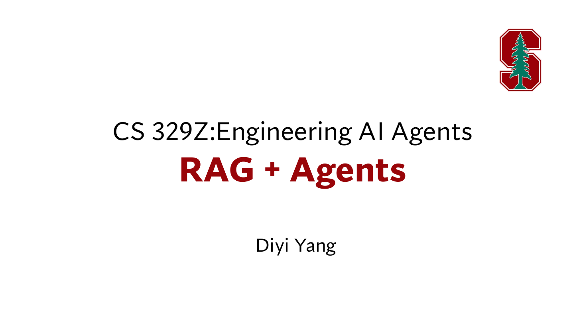
CS 329Z: Engineering AI Agents — RAG + Agents（讲师 Diyi Yang） 本讲封面：课程全称 CS 329Z: Engineering AI Agents ，第三讲主题
RAG + Agents（检索增强生成与智能体） ，由 Diyi Yang 授课。
Slide 2 Announcements（课程公告）选课、算力、Office hours、作业与项目提案
候补与旁听（Waitlist and Audit） ：开放候补名单与旁听；算力（Compute） ：详见 Canvas / 邮件通知；Office hours ：混合形式（hybrid）——一半 Zoom、一半线下；Homework 1 将于 10 月 5 日 发布；项目提案（Project proposal） 截止 10 月 9 日 。
Slide 3 Lecture Overview（本讲结构）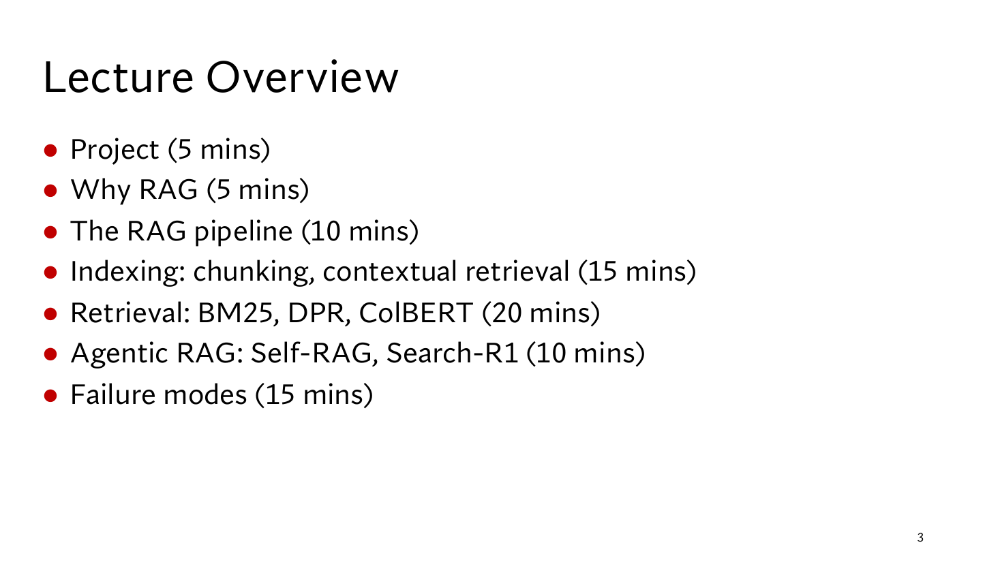
本讲七个部分及时间分配 本讲共七个部分：
课程项目（Project，5 分钟）
为什么需要 RAG（Why RAG，5 分钟）
RAG 流水线（The RAG pipeline，10 分钟）
索引构建：分块、上下文检索（Indexing: chunking, contextual retrieval，15 分钟）
检索：BM25、DPR、ColBERT（Retrieval，20 分钟）
智能体化 RAG：Self-RAG、Search-R1（Agentic RAG，10 分钟）
失效模式（Failure modes，15 分钟）
Slide 4 Pick A Topic that You're Excited About（选一个你兴奋的主题）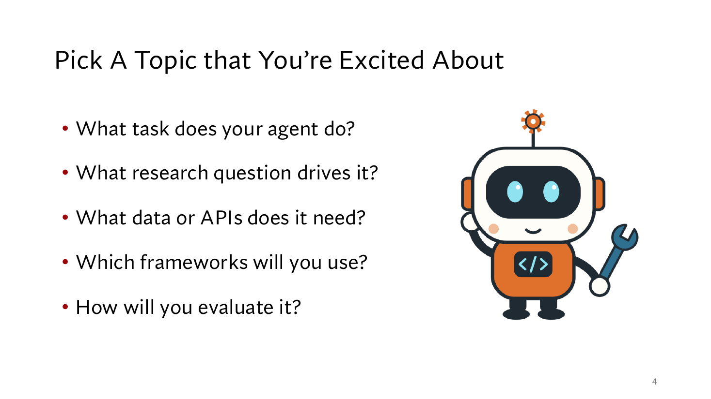
选题的五个自问 课程项目选题时，建议从以下五个问题入手：
你的智能体（agent）完成什么任务？（What task does your agent do?）
驱动它的研究问题是什么？（What research question drives it?）
它需要什么数据或 API？（What data or APIs does it need?）
你会使用哪些框架？（Which frameworks will you use?）
你将如何评测它？（How will you evaluate it?）
Slide 5 项目目标、聚焦点与严格评测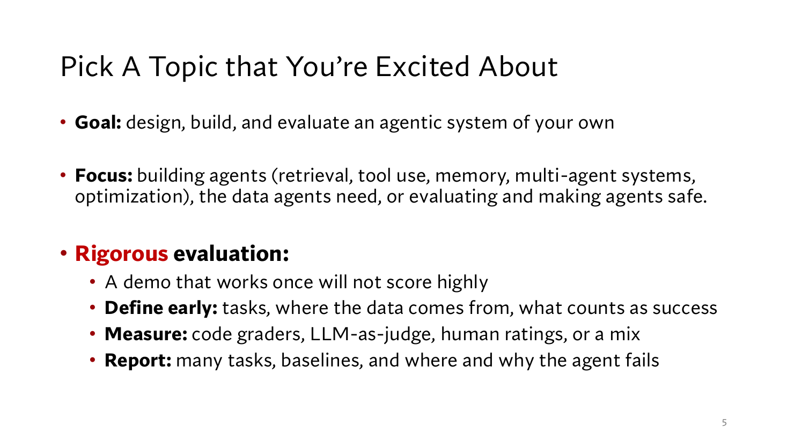
目标 / 聚焦点 / 严格评测（Rigorous evaluation）
目标（Goal） ：设计、构建并评测一个你自己的智能体系统（design, build, and evaluate an agentic system of your own）；聚焦点（Focus） ：构建智能体（检索、工具使用、记忆、多智能体系统、优化）、智能体所需的数据，或评测与使智能体安全；严格评测（Rigorous evaluation） （重点强调）：
"碰巧成功一次的 demo"（A demo that works once）不会得高分；
尽早定义（Define early） ：任务、数据来源、什么算成功；度量（Measure） ：代码评分器（code graders）、LLM-as-judge、人工评分，或混合方式；报告（Report） ：覆盖大量任务、基线对比，以及智能体在何处、为何失败。
Slide 6 Example Topics for CS329Z Course Projects（课程项目示例主题）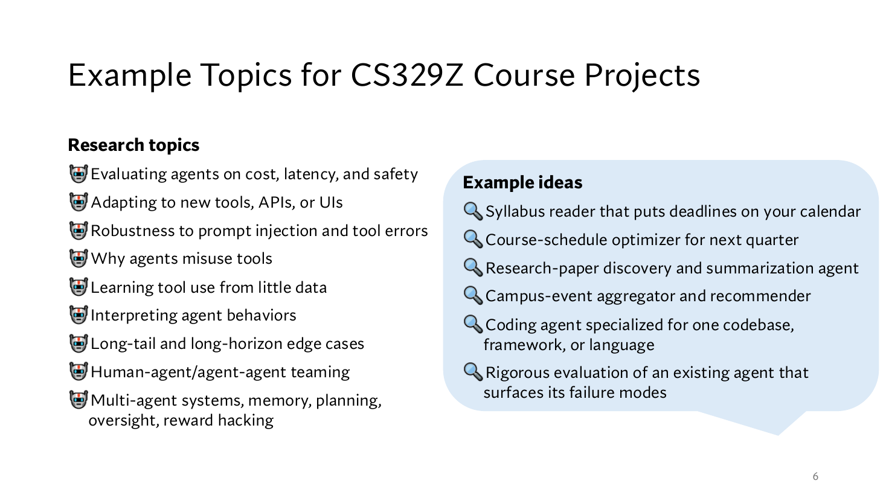
研究主题（Research topics）与创意示例（Example ideas） 研究主题（Research topics） ：
在成本、延迟与安全性上评测智能体（Evaluating agents on cost, latency, and safety）
适应新工具、API 或 UI（Adapting to new tools, APIs, or UIs）
对提示注入（prompt injection）与工具错误的鲁棒性
智能体为何误用工具（Why agents misuse tools）
从少量数据学习工具使用（Learning tool use from little data）
解释智能体行为（Interpreting agent behaviors）
长尾与长程边缘案例（Long-tail and long-horizon edge cases）
人-智能体 / 智能体-智能体协作（Human-agent / agent-agent teaming）
多智能体系统、记忆、规划、监督、奖励黑客（reward hacking）
创意示例（Example ideas） ：把截止日期写进日历的教学大纲阅读器（Syllabus reader）；下季度课程排课优化器；
研究论文发现与摘要智能体；校园活动聚合与推荐器；专攻某一代码库 / 框架 / 语言的编程智能体；
以及对现有智能体做严格评测以暴露其失效模式。
Slide 7 Project Team and Key Considerations（项目团队与关键考量）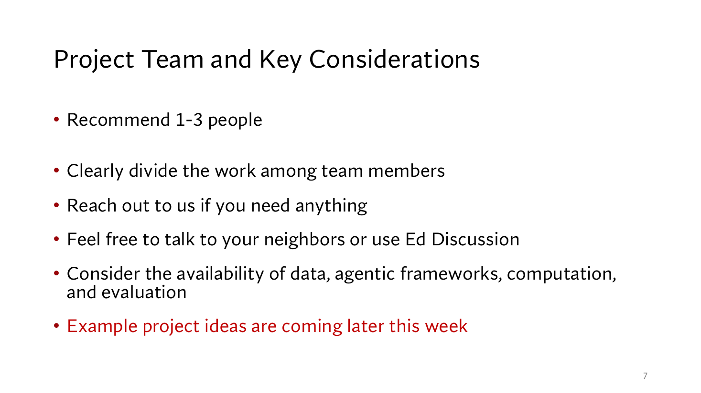
组队规模与分工建议
建议 1–3 人 组队；
团队成员间清晰分工（Clearly divide the work）；
有任何需要请主动联系课程团队（Reach out to us）；
欢迎与同学交流或使用 Ed Discussion；
考虑数据、智能体框架、算力与评测的可用性（Consider the availability of data, agentic frameworks, computation, and evaluation）；
示例项目创意（Example project ideas）将于本周稍后发布。
Slide 8 Recommendations for Successful Projects（项目成功建议）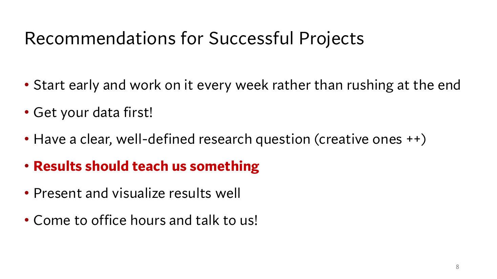
六条项目成功建议
尽早开始、每周推进，而不是最后突击（Start early and work on it every week）；
先拿到数据（Get your data first!） ；提出清晰、定义良好的研究问题（有创意的更佳）；
结果应当能教会我们一些东西（Results should teach us something） ——重点强调；把结果呈现与可视化做好（Present and visualize results well）；
多来 office hours 与我们交流。
Slide 9 Lecture Overview + Learning Objective（本讲结构与学习目标）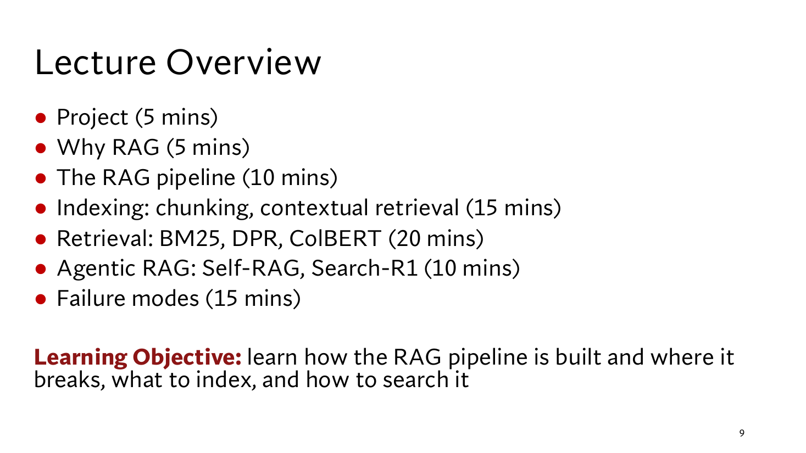
七个部分 + 学习目标 再次列出本讲七个部分（项目 5 分钟、Why RAG 5 分钟、RAG 流水线 10 分钟、索引构建 15 分钟、检索 20 分钟、
智能体化 RAG 10 分钟、失效模式 15 分钟），并明确学习目标（Learning Objective） ：
学习 RAG 流水线如何构建、它在何处会失效（where it breaks）、应该索引什么（what to index）以及如何去检索（how to search it）。
一、为什么需要 RAG（Why RAG）
Why Retrieval / Why RAG（Slide 10–15）
Slide 10 Why Retrieval?（为什么需要检索？）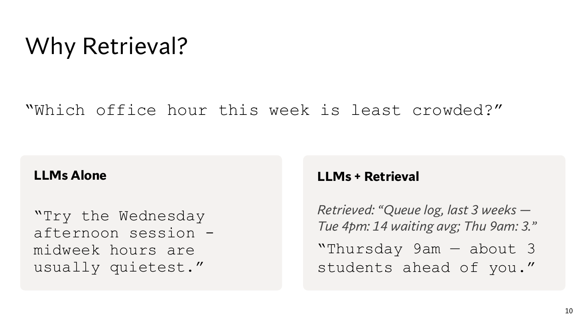
LLMs Alone vs. LLMs + Retrieval 的对比示例 以一个具体问题引入："本周哪个 office hour 最不挤？"（Which office hour this week is least crowded?）
仅靠 LLM（LLMs Alone） ：只能凭常识猜测——"试试周三下午的场次，周中时段通常最安静。"（这种回答没有依据，可能是臆测。）LLM + 检索（LLMs + Retrieval） ：先检索到真实数据——"排队记录，近 3 周：周二下午 4 点平均等待 14 人；周四上午 9 点 3 人。"
于是给出有据可依的回答："周四上午 9 点——前面大约 3 个学生。"
检索让回答从"听起来合理的猜测"变成"有真实数据支撑的结论"。
Slide 11 Using Retrieval to Overcome LMs' Shortcomings（用检索弥补语言模型的短板）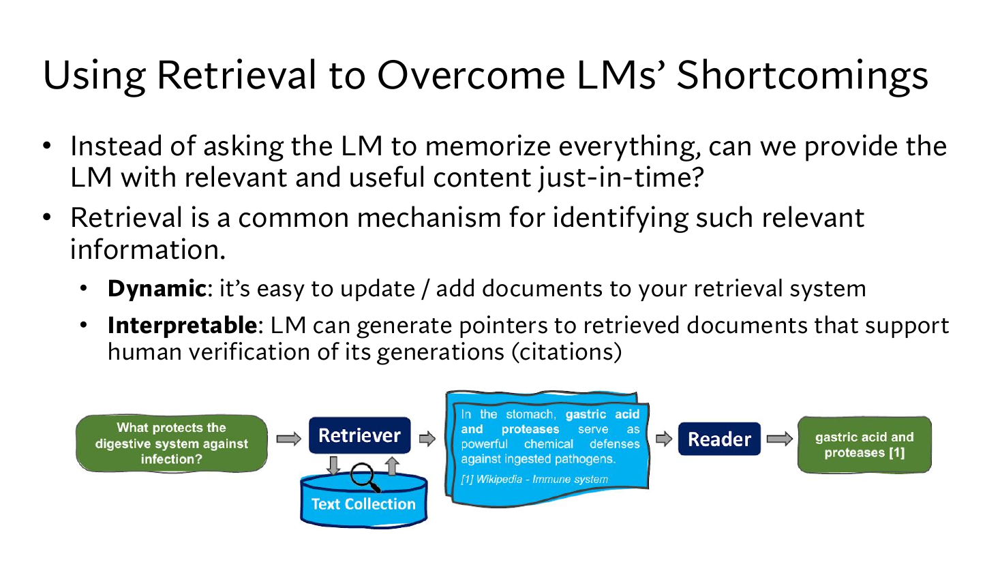
Retriever–Reader 示意：问题 → 检索 → 文档 → 阅读理解 → 带引用的答案
与其要求语言模型（LM）记住一切，不如在需要时（just-in-time）为它提供相关且有用的内容？
检索（Retrieval）是识别这类相关信息的常用机制，具有两大优点：
动态（Dynamic） ：向检索系统中更新 / 添加文档非常容易；可解释（Interpretable） ：LM 可以生成指向所检索文档的指针（pointers），支持人工核验其生成内容（citations，引用）。
图示的 Retriever–Reader 流程：问题"What protects the digestive system against infection?"经 Retriever 从文本集合
（Text Collection）中检索出相关段落（来自 Wikipedia – Immune system 的内容），再由 Reader 给出带引用 [1] 的答案
"gastric acid and proteases [1]"。
Slide 12 Retrieval Often Used in Open-Domain QA（检索常用于开放域问答）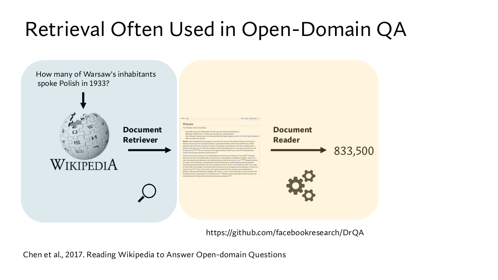
DrQA：Wikipedia 检索 + 文档阅读器 开放域问答（Open-Domain QA）的经典范式（DrQA）：对问题"How many of Warsaw's inhabitants spoke Polish in 1933?"，
Document Retriever（文档检索器） 从 Wikipedia 中检索出相关文档，
再由 Document Reader（文档阅读器） 从文档中读取出答案 833,500 。
引用：Chen et al., 2017. Reading Wikipedia to Answer Open-domain Questions ；
代码：https://github.com/facebookresearch/DrQA 。
Slide 13 Retriever–Reader Framework（检索器–阅读器框架）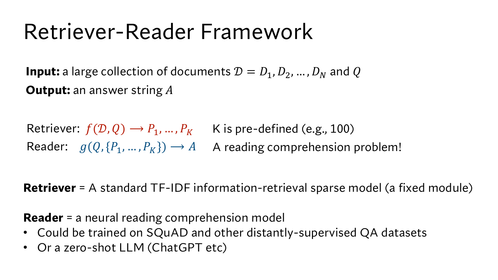
输入、输出与 Retriever / Reader 的定义
输入（Input） ：大规模文档集合 D = D₁, D₂, …, D_N 与问题 Q；输出（Output） ：答案字符串 A；Retriever（检索器） ：f(D, Q) → P₁, …, P_K ，K 预先定义（例如 100）；即标准 TF-IDF 信息检索稀疏模型（一个固定模块）；Reader（阅读器） ：g(Q, {P₁, …, P_K}) → A ——一个阅读理解问题（A reading comprehension problem!）；
是神经阅读理解模型，可以在 SQuAD 等远程监督（distantly-supervised）QA 数据集上训练，也可以是零样本 LLM（如 ChatGPT）。
Slide 14 Retrieval Augmented Generation (RAG)（检索增强生成）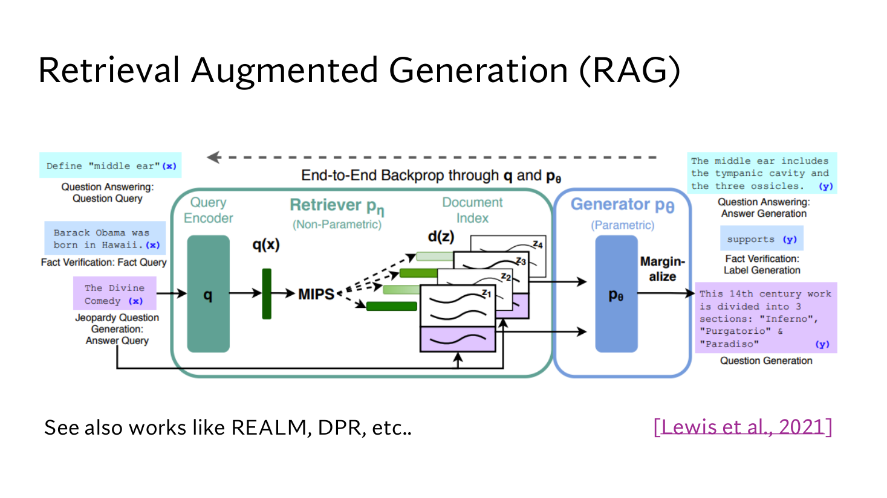
RAG 端到端架构：Query Encoder → MIPS → Document Index → Generator（Lewis et al., 2021） RAG 的端到端架构（Lewis et al., 2021 ，另见 REALM、DPR 等工作）：
Retriever p_η（非参数，Non-Parametric） ：查询编码器（Query Encoder）q 把查询 x 编码为 q(x)，
经 MIPS（最大内积搜索） 在文档索引（Document Index，向量 d(z)）中检索相关文档；Generator p_θ（参数化，Parametric） ：对检索结果做边缘化（Marginalize）后生成答案；整个系统可对 q 与 p_θ 做端到端反向传播（End-to-End Backprop） 联合训练；
支持的三类任务（x → y）：问答（Question Answering）、事实核验（Fact Verification）、Jeopardy 风格问题生成（Jeopardy Question Generation）。
Slide 15 Lecture Overview（章节过渡）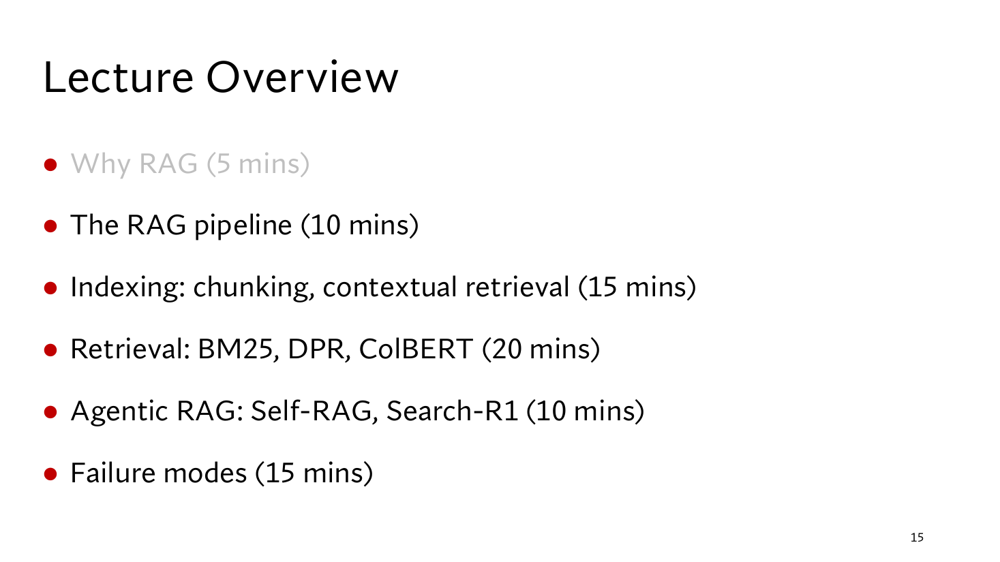
"Why RAG" 部分完成，进入后续部分 过渡页：Lecture Overview 中 "Why RAG（5 分钟）" 已置灰，表示该部分讲完，接下来进入 RAG 流水线及其深入剖析。
二、RAG 流水线深入剖析（Deep Dive into RAG）
The RAG pipeline（Slide 16–21）
Slide 16 Deep Dive into RAG（RAG 深入剖析：概率分解与两种变体）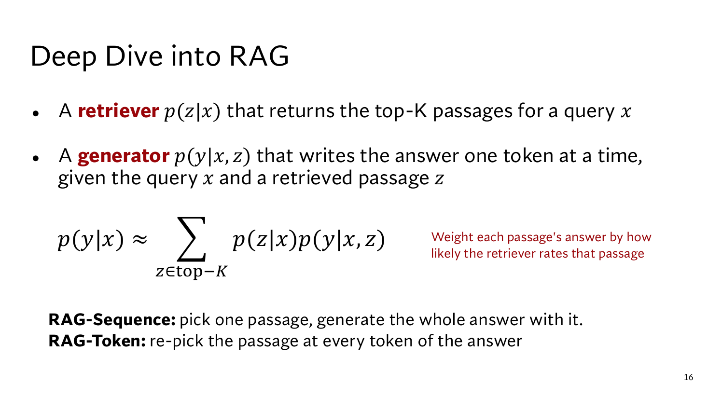
retriever p(z|x)、generator p(y|x,z) 与边缘化公式
检索器（retriever） p(z|x) ：为查询 x 返回 top-K 段落；生成器（generator） p(y|x, z) ：在给定查询 x 与检索段落 z 的条件下，逐 token 写出答案；边缘化公式：p(y|x) ≈ Σz∈top−K p(z|x)·p(y|x, z) ——按检索器对各段落的评分概率对每个段落给出的答案加权；
RAG-Sequence ：选定一个段落，用它生成整个答案；RAG-Token ：在答案的每个 token 处重新选择段落。
Slide 17 Deep Dive into RAG（联合训练目标）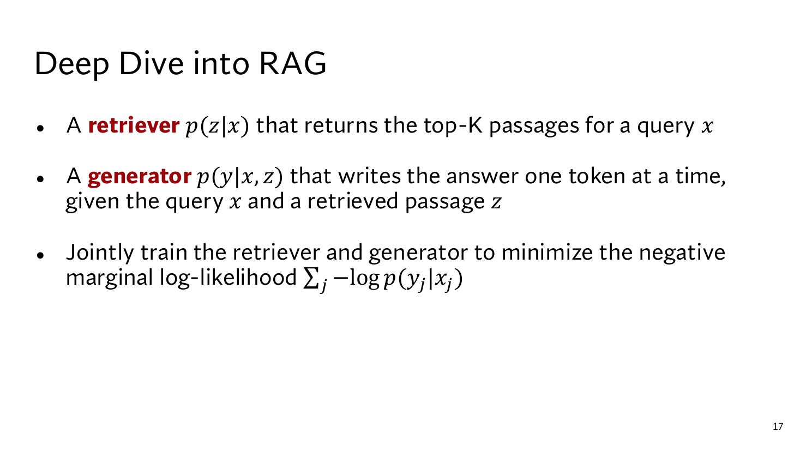
最小化负边际对数似然 延续上一页的定义，RAG 将检索器与生成器联合训练（Jointly train） ，目标是最小化负边际对数似然：
Σj −log p(yj | xj ) 。这正是"端到端反向传播"（Slide 14）在训练目标上的体现。
Slide 18 Retriever: DPR（检索器：密集段落检索）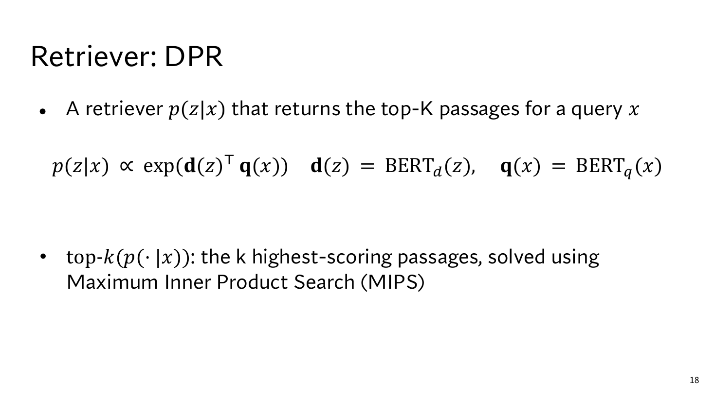
DPR 的双塔内积打分与 MIPS 求解
检索器 p(z|x) 为查询 x 返回 top-K 段落；
DPR（Dense Passage Retrieval）的打分函数：p(z|x) ∝ exp(d (z)ᵀ q (x)) ，
其中文档向量 d (z) = BERTd (z)q (x) = BERTq (x)
top-k(p(·|x)) ：取得分最高的 k 个段落，使用最大内积搜索（Maximum Inner Product Search, MIPS） 求解。
Slide 19 Generator: BART（生成器：BART）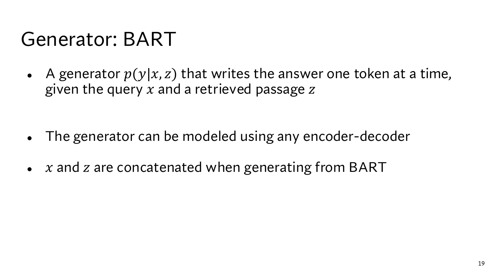
BART 编码器-解码器生成器
生成器 p(y|x, z) 在给定查询 x 与检索段落 z 的条件下逐 token 写出答案；
生成器可以用任何编码器-解码器（encoder-decoder） 结构建模；
在 BART 中生成时，将 x 与 z 拼接（concatenated）后输入。
Slide 20 RAG Performance on Open-Domain QA（RAG 在开放域问答上的表现）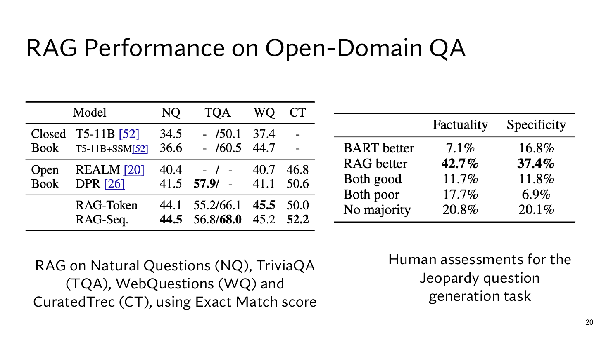
左：四个开放域 QA 基准的 Exact Match 对比；右：Jeopardy 问题生成的人工评估 左表 ：在 Natural Questions（NQ）、TriviaQA（TQA）、WebQuestions（WQ）、CuratedTrec（CT）上以 Exact Match 评分（加粗为各行/列最佳）：
设置 模型 NQ TQA WQ CT Closed Book（闭卷） T5-11B [52] 34.5 - / 50.1 37.4 - T5-11B+SSM [52] 36.6 - / 60.5 44.7 - Open Book（开卷） REALM [20] 40.4 - / - 40.7 46.8 DPR [26] 41.5 57.9 / - 41.1 50.6 （RAG） RAG-Token 44.1 55.2 / 66.1 45.5 50.0 RAG-Seq. 44.5 56.8 / 68.0 45.2 52.2
右表 ：Jeopardy 问题生成任务的人工评估（Factuality 事实性 / Specificity 具体性）：BART 更好 7.1% / 16.8%；
RAG 更好 42.7% / 37.4% （均最高）；两者都好 11.7% / 11.8%；两者都差 17.7% / 6.9%；无多数意见 20.8% / 20.1%。
结论：RAG 生成的问题在事实性与具体性上明显优于纯 BART。
Slide 21 Different Variants of RAG（RAG 的不同变体）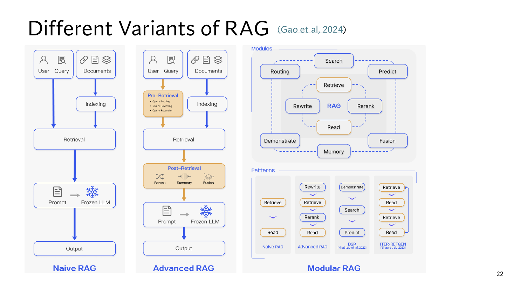
Naive RAG / Advanced RAG / Modular RAG 三种范式（Gao et al., 2024） RAG 的三种演进范式（Gao et al., 2024 ）：
Naive RAG（朴素 RAG） ：User/Query 与 Documents（经 Indexing 索引）→ Retrieval 检索 → 拼成 Prompt 送入冻结的 LLM（Frozen LLM） → Output；Advanced RAG（进阶 RAG） ：在朴素流程前后增加模块——
Pre-Retrieval（检索前） ：查询路由（Query Routing）、查询改写（Query Rewriting）、查询扩展（Query Expansion）；
Post-Retrieval（检索后） ：重排（Rerank）、摘要（Summary）、融合（Fusion）；Modular RAG（模块化 RAG） ：把 RAG 拆为可组合模块（Routing、Search、Predict、Retrieve、Rewrite、Rerank、Read、Demonstrate、Fusion、Memory），
再组合成不同模式（Patterns） ：Naive RAG（Retrieve→Read）、Advanced RAG（Rewrite→Retrieve→Rerank→Read）、
DSP（Demonstrate→Search→Predict，Khattab et al. 2022）、ITER-RETGEN（Retrieve→Read→Retrieve→Read 迭代，Shao et al. 2023）。
三、索引构建：分块与上下文检索（Indexing）
Indexing: chunking, contextual retrieval（Slide 22–39）
Slide 22 Lecture Overview（章节过渡）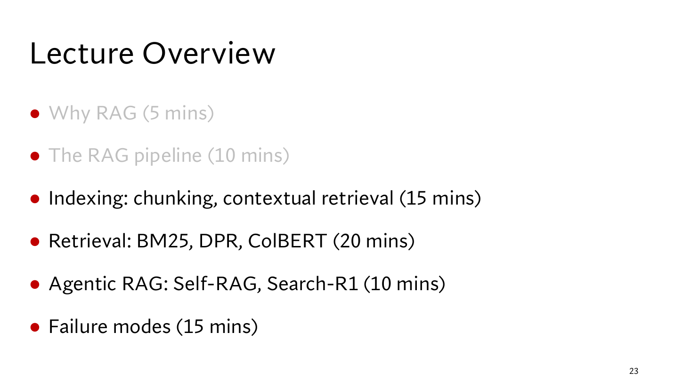
"The RAG pipeline" 完成，进入 Indexing 过渡页：Lecture Overview 中 "Why RAG" 与 "The RAG pipeline" 均已置灰，接下来进入
索引构建（Indexing：chunking、contextual retrieval，15 分钟） 。
Slide 23 What Makes A Good Retriever? Embeddings（什么造就好的检索器？嵌入）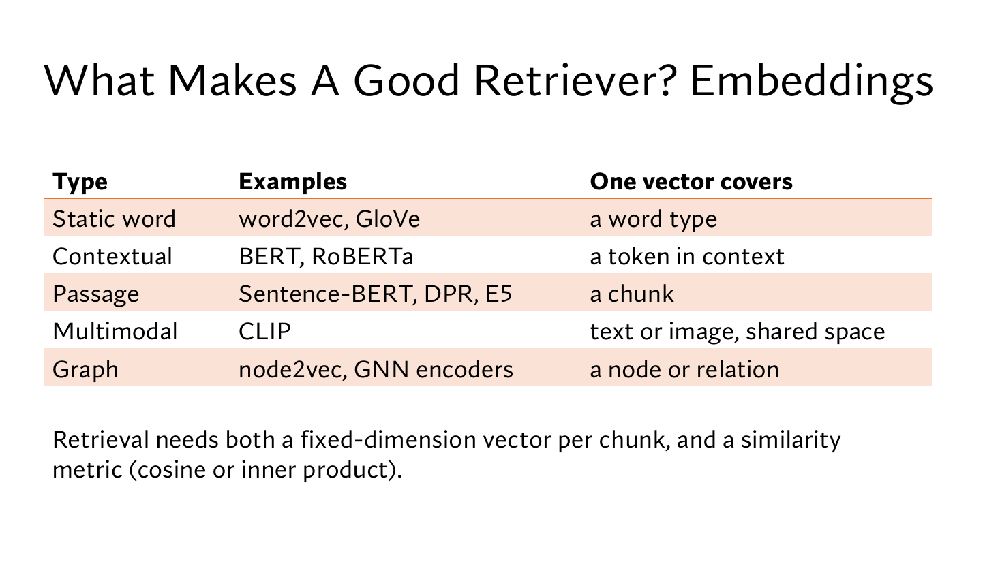
五类嵌入及其覆盖粒度
类型（Type） 示例（Examples） 一个向量覆盖（One vector covers） 静态词向量（Static word） word2vec, GloVe 一个词类型（a word type） 上下文嵌入（Contextual） BERT, RoBERTa 上下文中的一个 token（a token in context） 段落嵌入（Passage） Sentence-BERT, DPR, E5 一个块（a chunk） 多模态（Multimodal） CLIP 文本或图像，共享空间（text or image, shared space） 图嵌入（Graph） node2vec, GNN encoders 一个节点或关系（a node or relation）
检索需要两样东西：每个块一个固定维度的向量（fixed-dimension vector per chunk） ，
以及一个相似度度量（similarity metric） （余弦 cosine 或内积 inner product）。
Slide 24 Chunking: Basic Unit in Retrieval（分块：检索的基本单位）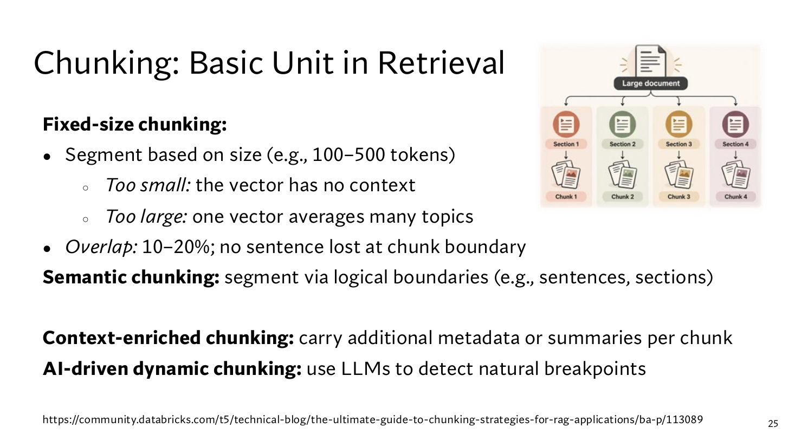
大文档 → 章节 → 块（Chunk 1–4）
固定大小分块（Fixed-size chunking） ：按大小切分（例如 100–500 tokens）
太小（Too small） ：向量没有上下文；太大（Too large） ：一个向量平均掉了许多主题。
重叠（Overlap） ：10–20%，保证分块边界处不丢句子；语义分块（Semantic chunking） ：按逻辑边界切分（如句子、章节）；上下文增强的分块（Context-enriched chunking） ：为每个块附带额外元数据或摘要；AI 驱动的动态分块（AI-driven dynamic chunking） ：用 LLM 检测自然断点。
参考：Databricks — The ultimate guide to chunking strategies for RAG applications 。
Slide 25 Chunking: Same Text, Three Splits（同一段文本的三种切法）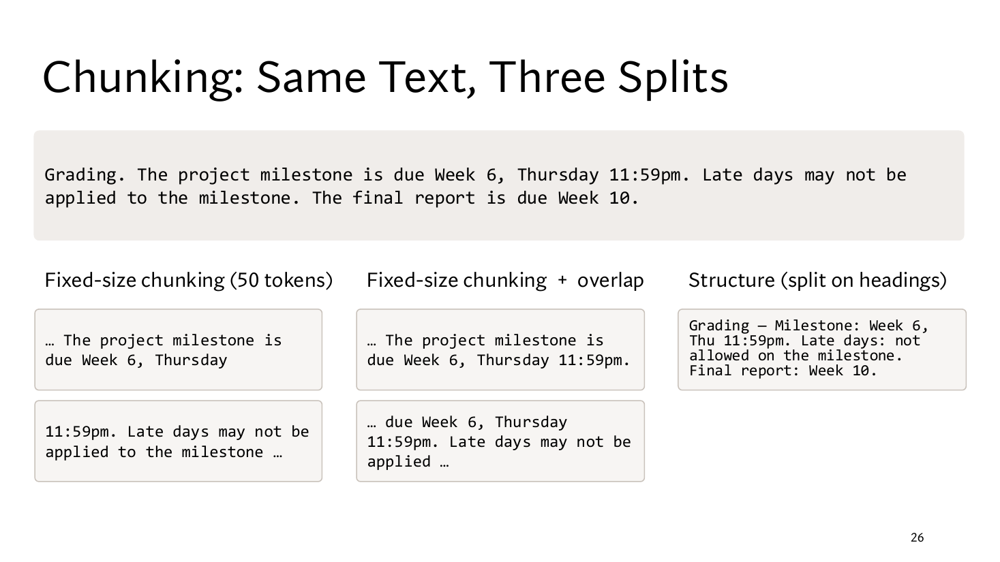
固定大小 / 固定大小+重叠 / 按标题结构 同一段评分规则文本（"Grading. The project milestone is due Week 6, Thursday 11:59pm. Late days may not be applied to the milestone. The final report is due Week 10."），三种切分方式对比：
固定大小分块（50 tokens） ：在"Thursday"与"11:59pm"之间硬切断，一个块以 "…due Week 6, Thursday" 结束、下一个以 "11:59pm. Late days…" 开头——截止时间信息被拦腰拆开；固定大小 + 重叠（+ overlap） ："…due Week 6, Thursday 11:59pm." 与 "… due Week 6, Thursday 11:59pm. Late days may not be applied …"——靠重叠保住边界信息，但冗余且仍可能切断语义；按结构切分（split on headings） ：得到 "Grading – Milestone: Week 6, Thu 11:59pm. Late days: not allowed on the milestone. Final report: Week 10."——信息完整、语义自洽。
Slide 26 Why Contextual Retrieval（为什么需要上下文检索）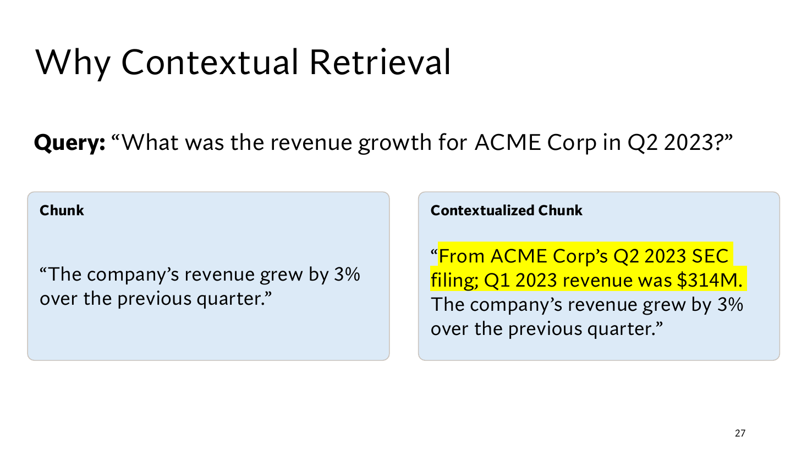
Chunk vs. Contextualized Chunk 查询（Query）："ACME Corp 在 2023 年 Q2 的收入增长是多少？"（What was the revenue growth for ACME Corp in Q2 2023?）
普通块（Chunk） ："The company's revenue grew by 3% over the previous quarter."——脱离上下文后，这个块不含公司名与季度，检索难以命中；上下文化块（Contextualized Chunk） ：在原句前补上上下文（高亮部分）——"From ACME Corp's Q2 2023 SEC filing; Q1 2023 revenue was $314M." + 原句。
块因此自带"我是谁、来自哪里"的信息，可被正确检索。
Slide 27 Contextual Retrieval（上下文检索：流程）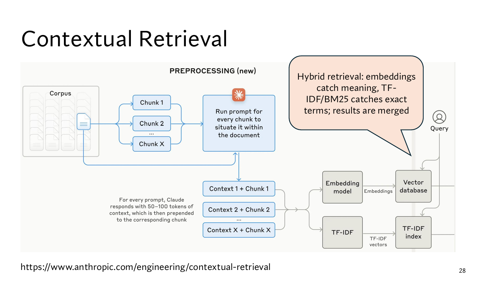
预处理：为每个块生成上下文并拼接，再建向量库与 TF-IDF 索引 Anthropic 提出的 Contextual Retrieval 流程（anthropic.com/engineering/contextual-retrieval ）：
预处理（PREPROCESSING，新增环节） ：语料库（Corpus）先切成 Chunk 1…Chunk X；对每个块运行提示词（Run prompt），让模型结合原文档为该块"定位上下文"
（situate it within the document）；每个提示下 Claude 回复 50–100 tokens 的上下文，拼接到对应块前（Context 1 + Chunk 1 …）；上下文化后的块同时进入两条索引通道：Embedding model → Vector database （向量检索）与 TF-IDF → TF-IDF index （词法检索）；
混合检索（Hybrid retrieval） ：嵌入捕捉语义，TF-IDF/BM25 捕捉精确词项，结果合并（results are merged）。
Slide 28 Contextual Retrieval（上下文检索：提示词）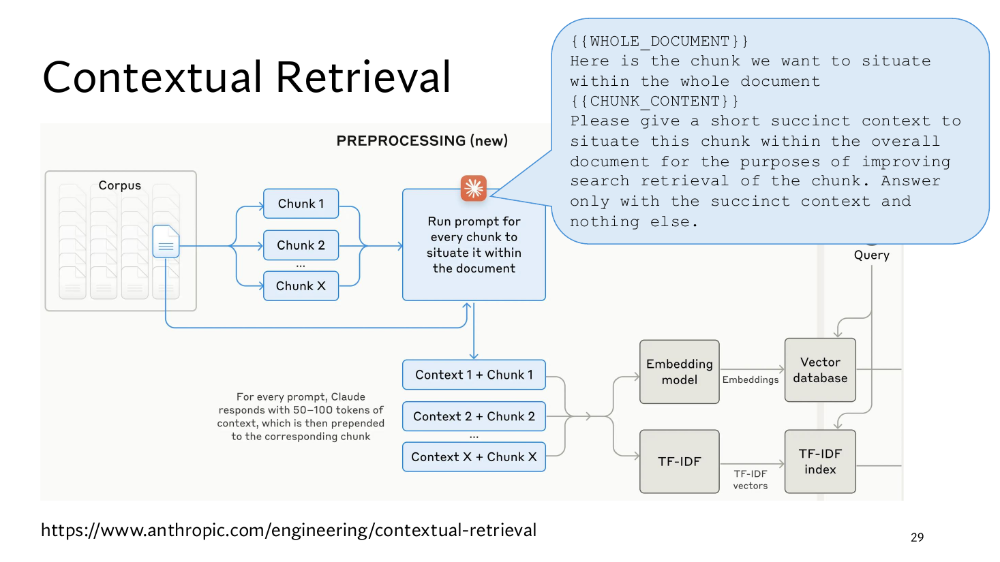
为块生成上下文的提示词模板 用于"上下文生成"的提示词模板：
{{WHOLE_DOCUMENT}}
Here is the chunk we want to situate within the whole document
{{CHUNK_CONTENT}}
Please give a short succinct context to situate this chunk within the overall document
for the purposes of improving search retrieval of the chunk.
Answer only with the succinct context and nothing else.
即：把整篇文档与目标块一起给模型，要求只输出简短上下文（50–100 tokens），用于提升该块的检索效果。
Slide 29 Contextual Embeddings Reduced Retrieval Failure Rate（上下文嵌入降低检索失败率）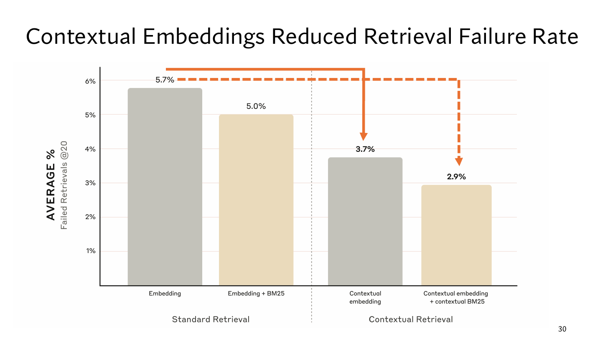
Failed Retrievals @20 平均百分比：标准检索 vs. 上下文检索 柱状图（纵轴：Failed Retrievals @20 平均百分比，越低越好）：
仅 Embedding Embedding + BM25 标准检索（Standard Retrieval） 5.7% 5.0% 上下文检索（Contextual Retrieval） 3.7% 2.9%
结论：上下文嵌入把检索失败率从 5.7% 降到 3.7%；再叠加上下文 BM25（混合检索）进一步降到 2.9% （相对标准嵌入检索约减半）。
Slide 30 Late Chunking（延迟分块）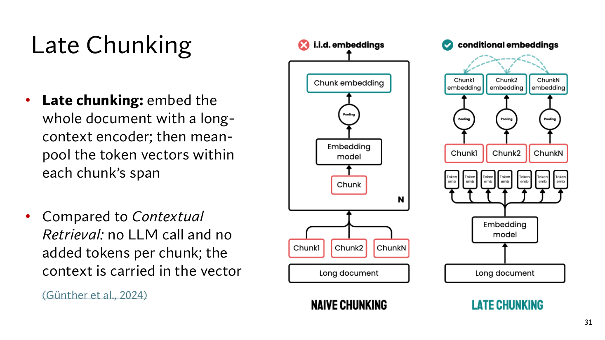
Naive chunking（i.i.d. 嵌入）vs. Late chunking（条件嵌入）
Late chunking（延迟分块） ：先用长上下文编码器 对整篇文档编码，再在每个块的跨度内对 token 向量做平均池化（mean-pool）得到块嵌入；对比 Contextual Retrieval ：不需要 LLM 调用，每个块也不增加额外 token；上下文信息直接承载在向量本身（conditional embeddings）中；
右图对比：Naive chunking 对每个块独立编码（i.i.d. embeddings），而 Late chunking 让块嵌入互相"看见"全文（conditional embeddings）。
引用：Günther et al., 2024 。
Slide 31 Retrieval Results with Long Late Chunking for Different Chunk Sizes（不同块大小下的检索结果）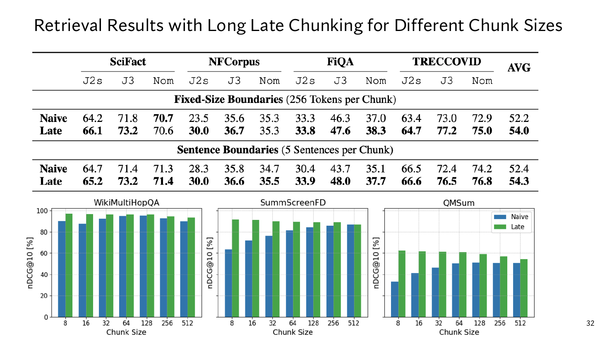
上：SciFact/NFCorpus/FiQA/TRECCOVID 表格；下：WikiMultiHopQA/SummScreenFD/QMSum 柱状图 上表（两种边界策略，加粗为更优值）：固定边界（每块 256 tokens）下 Late 在全部四个数据集优于 Naive（AVG 54.0 vs. 52.2）；
句子边界（每块 5 句）下同样全面占优（AVG 54.3 vs. 52.4）。例如 TRECCOVID 上 Late：77.2（J3）/75.0（Nom）对比 Naive 的 73.0/72.9。
下方三张柱状图（nDCG@10 %，横轴块大小 8–512）：在 WikiMultiHopQA、SummScreenFD、QMSum 上，Late（绿）在各块大小下总体不低于、多数显著高于 Naive（蓝），
尤其在长文档数据集（SummScreenFD、QMSum）的小块设置下优势最大。
Slide 32 Hierarchical/Tree-Structured Indexing: RAPTOR（层次/树结构索引）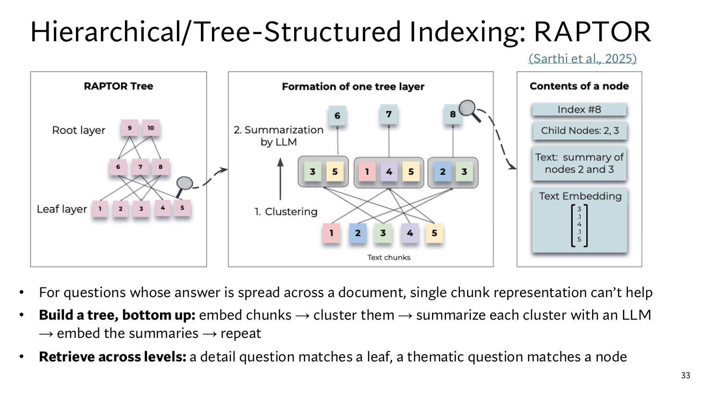
RAPTOR 树、单层构建过程与节点内容（Sarthi et al., 2025）
对答案分散在整篇文档中的问题，单一块的表示帮不上忙；
自底向上建树（Build a tree, bottom up） ：嵌入各块 → 聚类 → 用 LLM 摘要每个聚类 → 嵌入摘要 → 重复（形成 Leaf layer → … → Root layer 的树）；跨层检索（Retrieve across levels） ：细节问题命中叶子，主题性问题命中上层节点；单层构建：1. Clustering（聚类文本块）→ 2. Summarization by LLM（LLM 摘要生成上层节点）；
节点内容（Contents of a node）：索引号、子节点列表、子节点摘要文本、文本嵌入向量。
引用：Sarthi et al., 2025 （RAPTOR）。
Slide 33 RAPTOR：与 DPR 的检索对比（Cinderella 示例）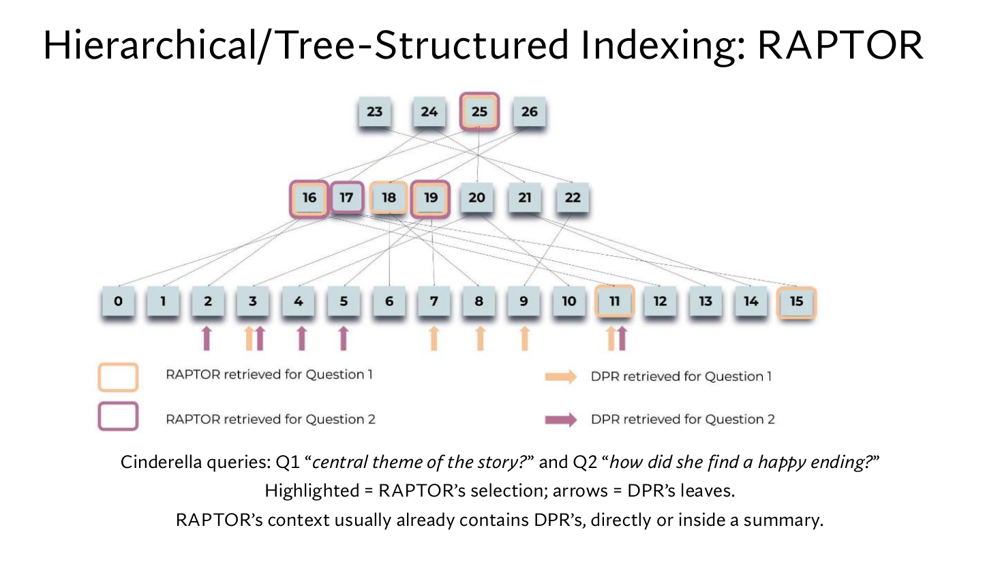
高亮框 = RAPTOR 的选择；箭头 = DPR 选中的叶子 以《灰姑娘》（Cinderella）的两个问题为例：Q1 "central theme of the story?（故事的中心主题？）"与
Q2 "how did she find a happy ending?（她如何获得幸福结局？）"。树中：底层叶子 0–15，中层节点 16–22，顶层节点 23–26。
RAPTOR 会选中相关的高层节点（如 Q2 选中 16、17、19、25），而 DPR 只能选中若干叶子（箭头所示）。
RAPTOR 选中的上下文通常已经直接或通过摘要包含了 DPR 选中的内容 ——层次索引在主题性问题上更高效。
Slide 34 GraphRAG: query-focused over LLM-built graph（基于 LLM 构建图的查询聚焦检索）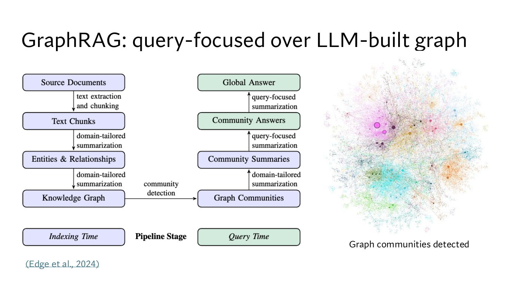
索引期与查询期两条流水线 + 检测到的图社区（Edge et al., 2024） GraphRAG（Edge et al., 2024 ）流水线分两个阶段：
索引期（Indexing Time） ：Source Documents →（文本抽取与分块）→ Text Chunks →（领域定制的摘要）→ Entities & Relationships →（领域定制的摘要）→ Knowledge Graph →（社区检测 community detection）→ Graph Communities；查询期（Query Time） ：Graph Communities →（领域定制摘要）→ Community Summaries →（查询聚焦摘要）→ Community Answers →（查询聚焦摘要）→ Global Answer ；右图：LLM 从语料构建的知识图上检测出的图社区（Graph communities detected） （不同颜色为不同社区）。
Slide 35 GraphRAG: More Variants（GraphRAG 的更多变体）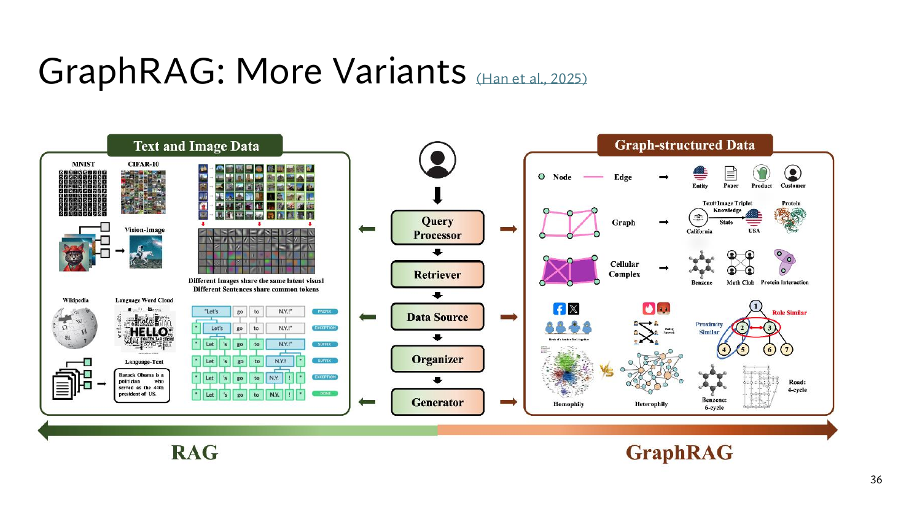
从 RAG（文本与图像数据）到 GraphRAG（图结构数据）的统一流水线（Han et al., 2025） 统一的 RAG→GraphRAG 谱系（Han et al., 2025 ）：中间是通用流水线 Query Processor → Retriever → Data Source → Organizer → Generator。
左侧 RAG 面向文本与图像数据（MNIST、CIFAR-10、Vision-Image、Wikipedia、Language Word Cloud、Language-Text 等，
"不同图像共享同一潜在视觉、不同句子共享共同 token"）；右侧 GraphRAG 面向图结构数据：
节点/边可表示实体、论文、产品、客户；Graph 可表示文本-图像三元知识、蛋白质等；Cellular Complex 可表示苯环、数学俱乐部、蛋白质相互作用；
并涉及 Homophily/Heterophily、Proximity Similar vs. Role Similar 等图性质。
Slide 36 Vector Search（向量搜索）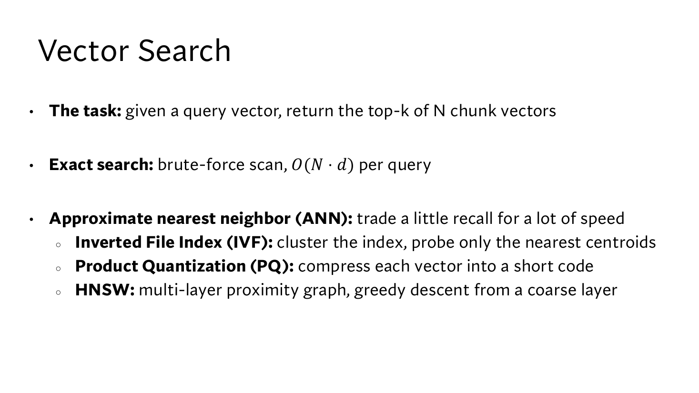
精确搜索与近似最近邻（ANN）三类方法
任务 ：给定查询向量，从 N 个块向量中返回 top-k；精确搜索（Exact search） ：暴力扫描，每次查询 O(N·d)；近似最近邻（Approximate nearest neighbor, ANN） ：用少量召回率换取大幅速度提升：
倒排文件索引（Inverted File Index, IVF） ：对索引聚类，只探测最近的质心；乘积量化（Product Quantization, PQ） ：把每个向量压缩成短码；HNSW ：多层邻近图，从粗层贪心下降。
Slide 37 HNSW（分层可导航小世界）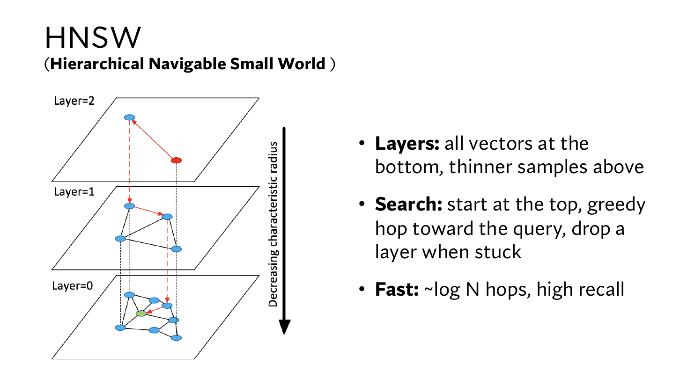
Layer 2 → Layer 1 → Layer 0，特征半径递减
层（Layers） ：所有向量都在底层（Layer=0），上层是越来越稀疏的抽样（特征半径 decreasing characteristic radius 递减）；搜索（Search） ：从顶层出发，贪心跳向查询方向，卡住时下降一层（drop a layer when stuck）；快（Fast） ：约 log N 跳，召回率高。
Slide 38 HNSW：图如何构建（backup）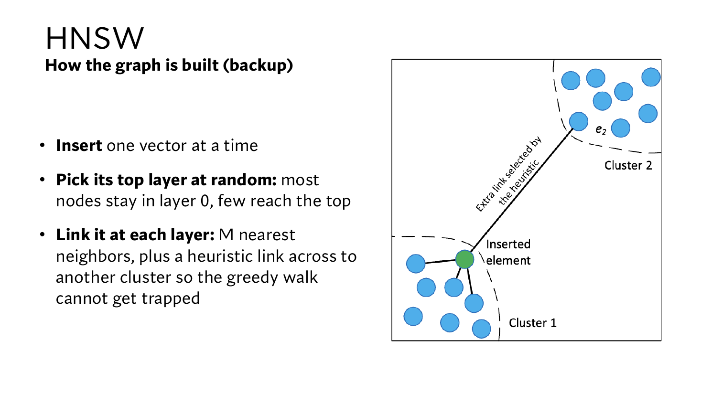
插入元素与跨簇启发式链接
逐个插入（Insert） 向量；随机选定其最高层（Pick its top layer at random） ：多数节点停留在 layer 0，少数到达顶层；在每一层建立链接（Link it at each layer） ：连接 M 个最近邻，并额外加一条启发式跨簇链接（heuristic link across to another cluster），
使贪心游走不会被困在局部（图中：Inserted element 经 "Extra link selected by the heuristic" 连到 Cluster 2 的 e₂）。
Slide 39 Lecture Overview（章节过渡）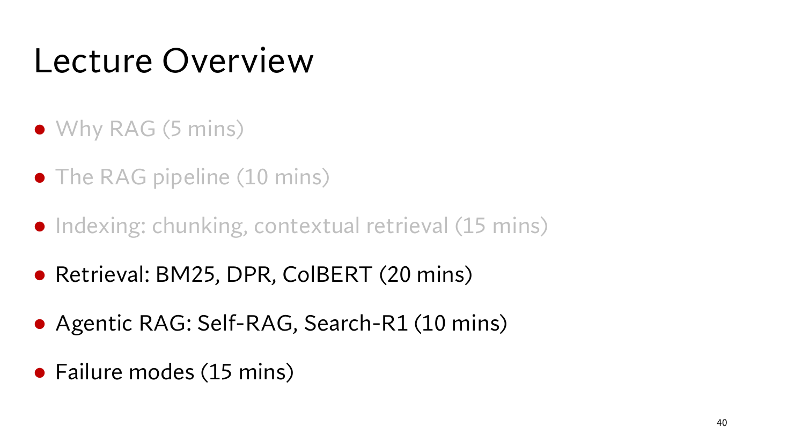
"Indexing" 完成，进入 Retrieval 过渡页：Lecture Overview 中 "Why RAG"、"The RAG pipeline"、"Indexing: chunking, contextual retrieval" 均已置灰，
接下来进入 检索（Retrieval：BM25、DPR、ColBERT，20 分钟） 。
四、检索：BM25、DPR、ColBERT（Retrieval）
Retrieval: BM25, DPR, ColBERT（Slide 40–54）
Slide 40 Different Types of Retrievers（不同类型的检索器）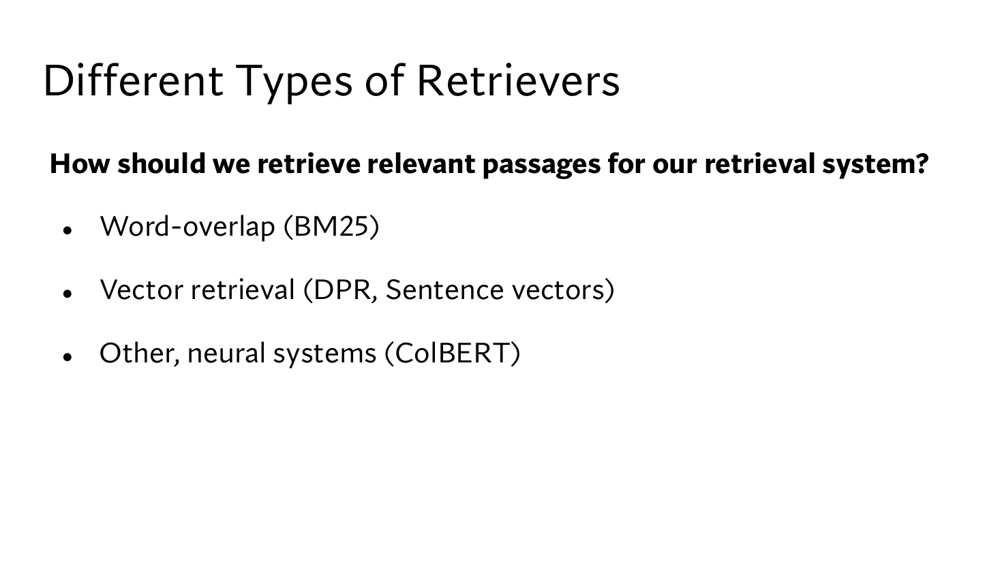
词重叠 / 向量检索 / 神经检索 核心问题：我们应当如何为检索系统检索相关段落？ （How should we retrieve relevant passages for our retrieval system?）三类方法：
词重叠（Word-overlap） ：BM25；向量检索（Vector retrieval） ：DPR、Sentence vectors；其他神经系统（Other, neural systems） ：ColBERT。
Slide 41 BM25: the most widely used (even today)（至今仍最常用的词法检索）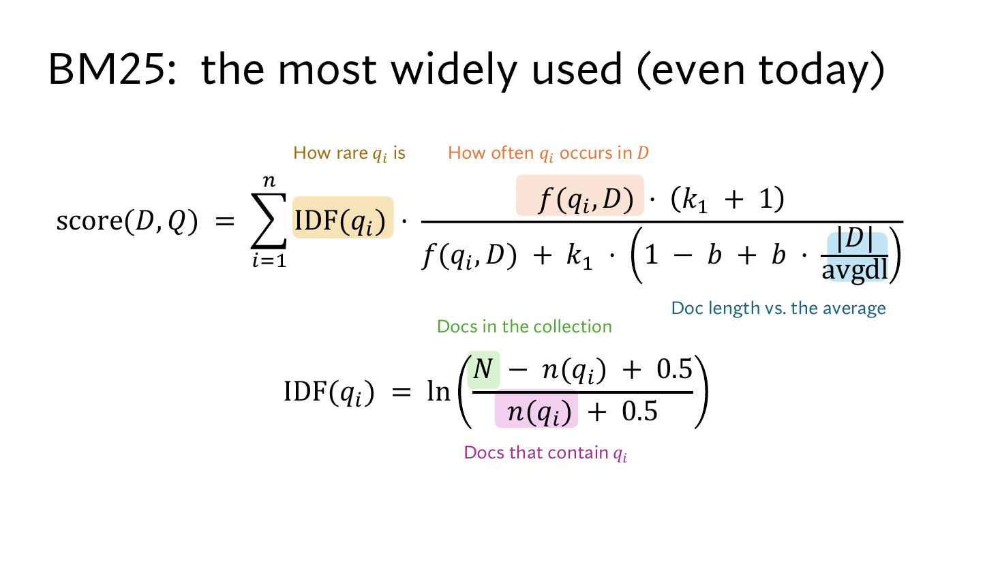
BM25 打分公式与 IDF 定义（各因子带注释） BM25 打分公式（各因子含义如图中注释）：
score(D, Q) = Σi=1..n IDF(qᵢ) · f(qᵢ,D)·(k₁+1) / [ f(qᵢ,D) + k₁·(1 − b + b·|D|/avgdl) ] ；IDF(qᵢ) ：词项 qᵢ 有多稀有（How rare qᵢ is）；f(qᵢ, D) ：qᵢ 在文档 D 中出现的频率（How often qᵢ occurs in D）；|D|/avgdl ：文档长度相对平均文档长度的归一化（Doc length vs. the average）；IDF 定义：IDF(qᵢ) = ln( (N − n(qᵢ) + 0.5) / (n(qᵢ) + 0.5) ) ，其中 N 为集合中的文档数（Docs in the collection），
n(qᵢ) 为包含 qᵢ 的文档数（Docs that contain qᵢ）。
Slide 42 IDF Comparison and Term Frequency Saturation（IDF 对比与词频饱和）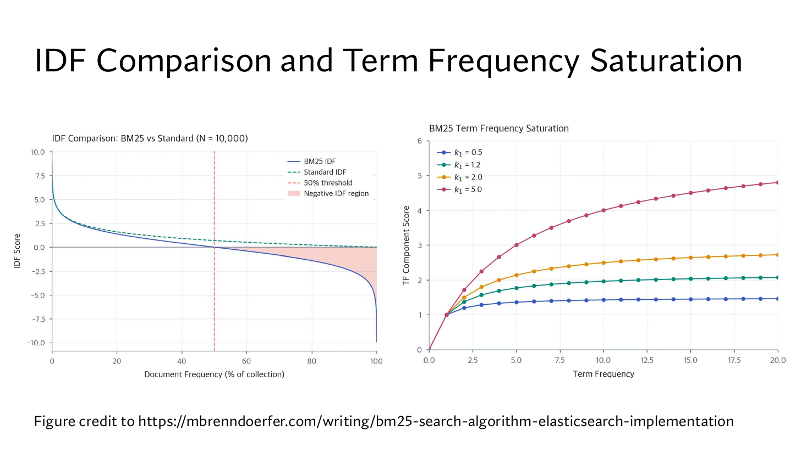
左：BM25 vs Standard IDF（N=10,000）；右：BM25 词频饱和曲线（k₁=0.5/1.2/2.0/5.0）
左图（IDF Comparison: BM25 vs Standard, N = 10,000） ：横轴为文档频率（占集合百分比），纵轴为 IDF 分数。
当词项出现在超过约 50% 的文档中（50% threshold 虚线右侧的 Negative IDF region，红色阴影区），BM25 的 IDF 变为负值——
过于常见的词会拉低得分；而标准 IDF（绿色虚线）则始终非负、缓慢趋近 0。右图（BM25 Term Frequency Saturation） ：横轴为词频（0–20），纵轴为 TF 分量得分（0–6）。
不同 k₁（0.5/1.2/2.0/5.0）下，TF 得分随词频增长而饱和 （对数式增长、趋于平台）：
k₁ 越小饱和越快、上限越低；k₁=5.0 时增长更陡、上限更高。说明词频的作用存在边际递减。
图来源：mbrenndoerfer.com — BM25 search algorithm & Elasticsearch implementation 。
Slide 43 DPR: dense passage retrieval（密集段落检索：流程）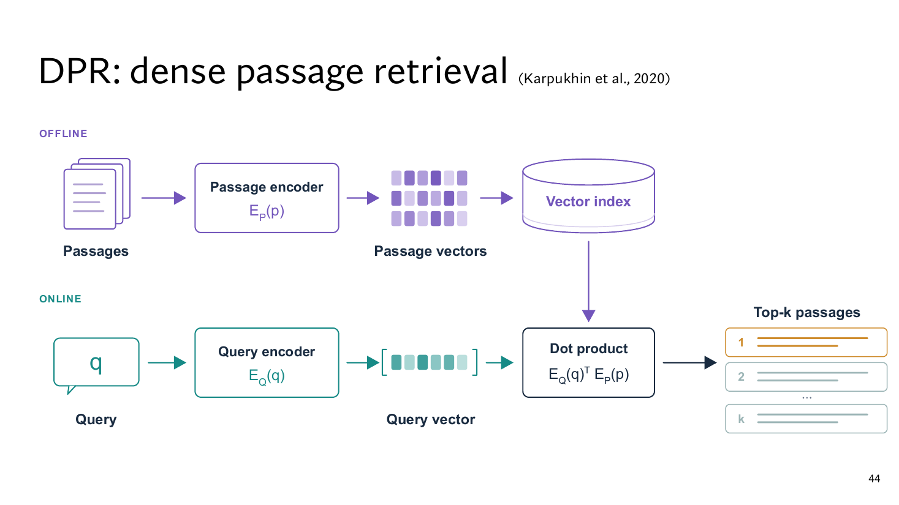
离线建索引 + 在线查询（Karpukhin et al., 2020） DPR（Karpukhin et al., 2020 ）分两个阶段：
离线（OFFLINE） ：Passages（段落）经 Passage encoder EP (p) 编码为段落向量（Passage vectors），存入 Vector index（向量索引） ；在线（ONLINE） ：Query q 经 Query encoder EQ (q) 编码为查询向量（Query vector），
与段落向量做点积（Dot product）EQ (q)ᵀ EP (p) ，返回 Top-k passages 。
Slide 44 DPR: dense passage retrieval（对比训练损失）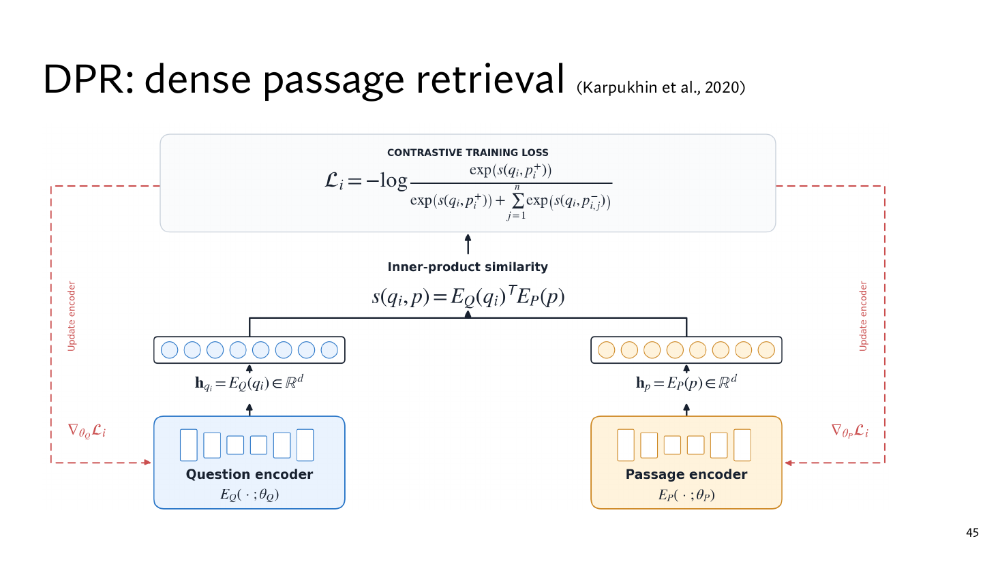
双塔编码器 + 对比训练损失（Karpukhin et al., 2020）
问题编码器 EQ (·;θQ ) 与段落编码器 EP (·;θP ) 分别产出向量 hqᵢ = EQ (qᵢ) ∈ ℝd 与 hp = EP (p) ∈ ℝd ；
内积相似度（Inner-product similarity） ：s(qᵢ, p) = EQ (qᵢ)ᵀ EP (p) ；对比训练损失（Contrastive training loss） ：Li = −log [ exp(s(qᵢ, p⁺)) / ( exp(s(qᵢ, p⁺)) + Σj=1..n exp(s(qᵢ, pi,j ⁻)) ) ] ——
最大化正例段落 pᵢ 的得分、压低 n 个负例段落的得分；损失通过 ∇θQ Lᵢ 与 ∇θP Lᵢ 反向传播，同时更新两个编码器（Update encoder） 。
Slide 45 Scoring a Retriever: Hit@k, Failed@k, nDCG@k（检索器评分指标一）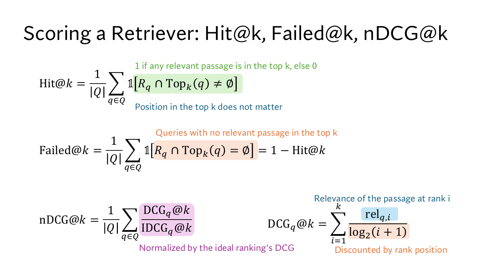
Hit@k、Failed@k、nDCG@k 定义
Hit@k = (1/|Q|) Σq∈Q 𝟙[Rq ∩ Topk (q) ≠ ∅]：top-k 中只要命中任一相关段落即记 1（1 if any relevant passage is in the top k, else 0）；
在 top-k 内的具体位置不重要（Position in the top k does not matter）；Failed@k = (1/|Q|) Σq∈Q 𝟙[Rq ∩ Topk (q) = ∅] = 1 − Hit@k：top-k 中没有任何相关段落的查询占比；nDCG@k = (1/|Q|) Σq∈Q DCGq @k / IDCGq @k，用理想排序的 DCG 归一化（Normalized by the ideal ranking's DCG）；
其中 DCGq @k = Σi=1..k relq,i / log₂(i+1)，按排名位置折扣（Discounted by rank position），relq,i 为第 i 位段落的相关性。
Slide 46 Scoring a Retriever: MRR@k, Recall@k（检索器评分指标二）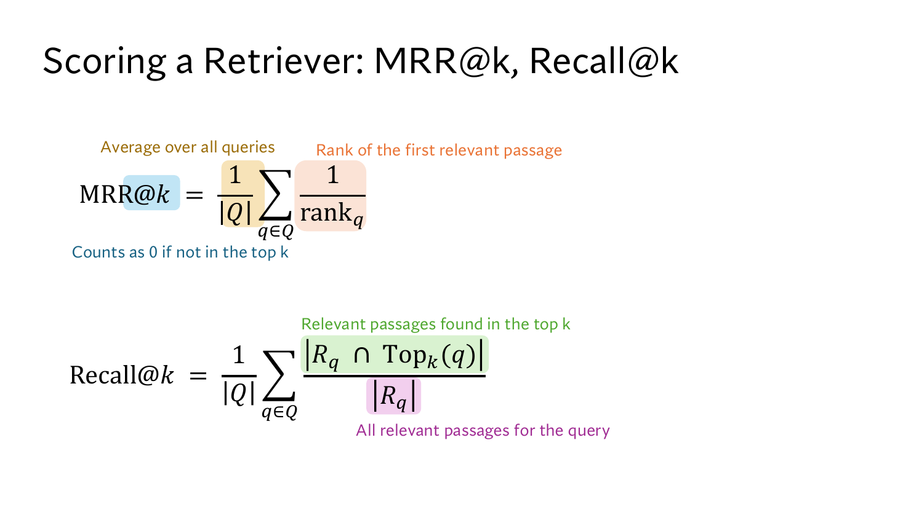
MRR@k 与 Recall@k 定义
MRR@k = (1/|Q|) Σq∈Q 1/rankq ：对所有查询取平均（Average over all queries），rankq 是第一个相关段落的排名（Rank of the first relevant passage）；
若 top-k 中没有相关段落则计 0（Counts as 0 if not in the top k）；Recall@k = (1/|Q|) Σq∈Q |Rq ∩ Topk (q)| / |Rq |：top-k 中找到的相关段落数（Relevant passages found in the top k）
占该查询全部相关段落数（All relevant passages for the query）的比例。
Slide 47 DPR beats BM25 on 4 of 5 datasets（DPR 在 5 个数据集中的 4 个胜过 BM25）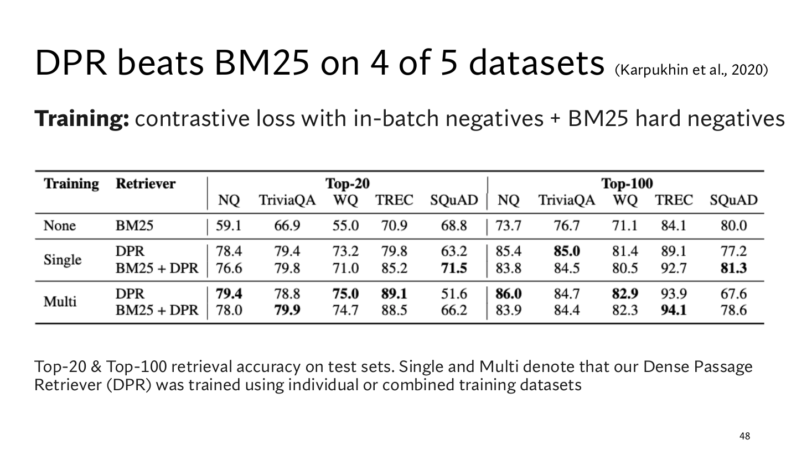
Top-20 与 Top-100 检索准确率（Karpukhin et al., 2020） 训练方式 ：对比损失 + 批内负例（in-batch negatives）+ BM25 硬负例（hard negatives）。加粗为各列最佳：
训练 检索器 Top-20（NQ / TriviaQA / WQ / TREC / SQuAD） Top-100（NQ / TriviaQA / WQ / TREC / SQuAD） None BM25 59.1 66.9 55.0 70.9 68.8 73.7 76.7 71.1 84.1 80.0 Single DPR 78.4 79.4 73.2 79.8 63.2 85.4 85.0 81.4 89.1 77.2 BM25 + DPR 76.6 79.8 71.0 85.2 71.5 83.8 84.5 80.5 92.7 81.3 Multi DPR 79.4 78.8 75.0 89.1 51.6 86.0 84.7 82.9 93.9 67.6 BM25 + DPR 78.0 79.9 74.7 88.5 66.2 83.9 84.4 82.3 94.1 78.6
注：Top-20 与 Top-100 为测试集上的检索准确率；Single / Multi 表示 DPR 用单个数据集或合并数据集训练。
DPR 在 NQ、TriviaQA、WQ、TREC 上胜出，仅 SQuAD 上 BM25 更强。
Slide 48 1,000 QA pairs are enough to beat BM25（1,000 条 QA 对就足以超过 BM25）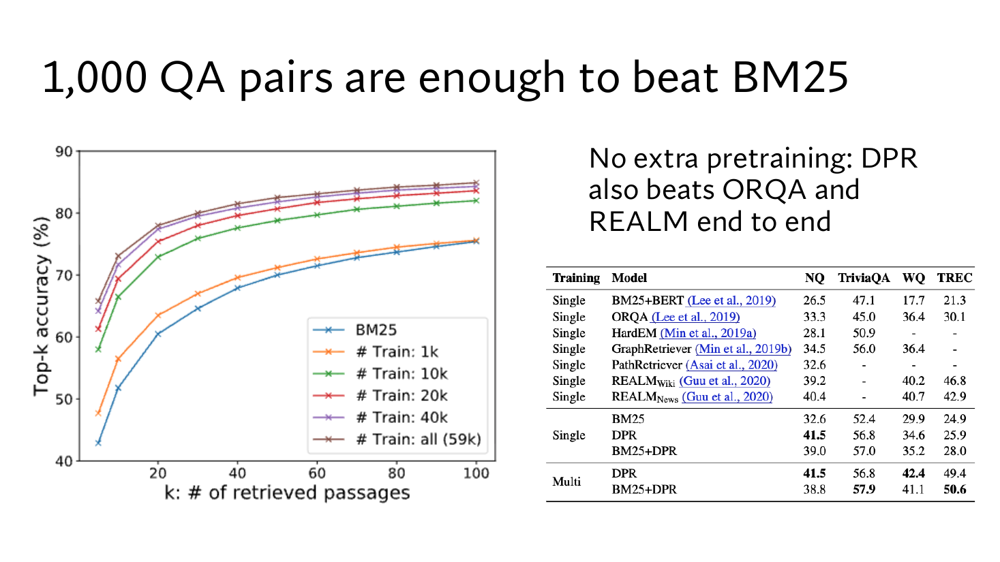
左：不同训练规模的 Top-k 准确率曲线；右：端到端对比表
左图 （横轴 k = 检索段落数 1–100，纵轴 Top-k accuracy %）：训练数据从 1k、10k、20k、40k 到全量 59k，
曲线依次上移；即便只用 1k 训练对 ，DPR 的曲线也已整体高于 BM25（蓝线垫底）；右表 ：无需额外预训练（No extra pretraining），DPR 端到端也胜过 ORQA 与 REALM。
各模型在 NQ / TriviaQA / WQ / TREC 上的表现（加粗为各列最佳），例如 BM25+BERT 26.5/47.1/17.7/21.3、ORQA 33.3/45.0/36.4/30.1、
REALMwiki 39.2/-/40.2/46.8、REALMNews 40.4/-/40.7/42.9；而 Multi 训练的 BM25+DPR 达到 38.8/57.9/41.1/50.6 。
Slide 49 Hybrid Search and Reciprocal Rank Fusion（混合搜索与倒数排名融合）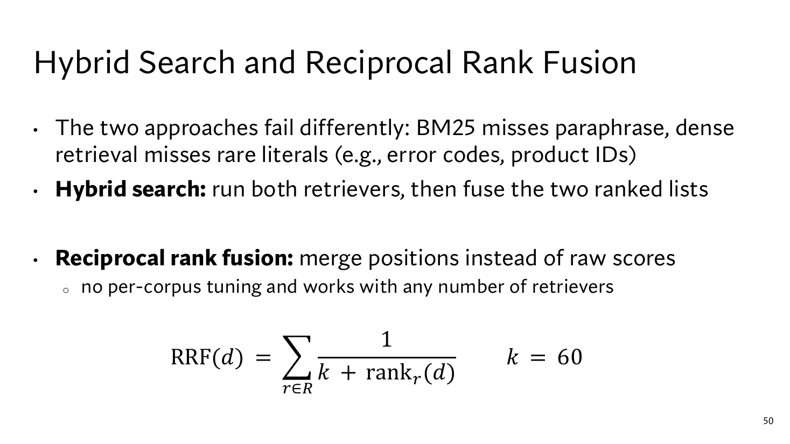
BM25 与密集检索互补，RRF 融合排名
两类方法的失效方式不同：BM25 会漏掉同义改写（misses paraphrase） ，
密集检索会漏掉罕见字面词（misses rare literals） （如错误码 error codes、产品 ID product IDs）；
混合搜索（Hybrid search） ：两个检索器都跑，然后融合两份排名列表；倒数排名融合（Reciprocal rank fusion, RRF） ：融合排名位置 而非原始分数（merge positions instead of raw scores）——
无需逐语料调参，且适用于任意数量的检索器；公式：RRF(d) = Σr∈R 1 / (k + rankr (d)) ，通常取 k = 60 。
Slide 50 Cross-Encoders and Reranking（交叉编码器与重排）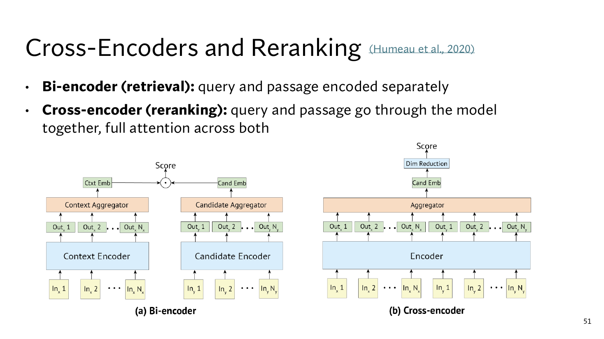
(a) Bi-encoder 与 (b) Cross-encoder 结构对比（Humeau et al., 2020）
双塔编码器（Bi-encoder，用于检索 retrieval） ：查询与段落分别独立编码（query and passage encoded separately）——
各自经 Context Encoder / Candidate Encoder → 聚合器（Aggregator）→ 嵌入向量，最后点积求 Score；交叉编码器（Cross-encoder，用于重排 reranking） ：查询与段落一起 过模型，二者之间做完整注意力（full attention across both）——
单一 Encoder 同时编码 Inx 与 Iny → Aggregator → 候选嵌入 → 降维（Dim Reduction）→ Score。
引用：Humeau et al., 2020 （Poly-encoders 所在工作，图示为 bi-encoder 与 cross-encoder 的结构对比）。
Slide 51 Late Interaction: Score Tokens, Not Documents（延迟交互：对 token 打分而非文档）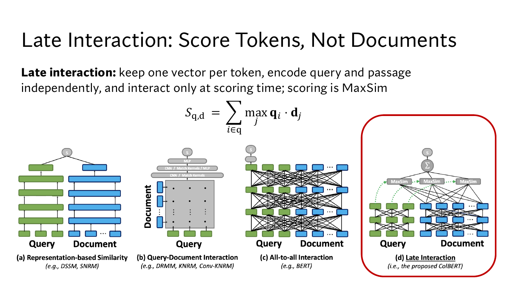
(a) 表示相似度 (b) 查询-文档交互 (c) 全交互 (d) 延迟交互（ColBERT，红框）
Late interaction（延迟交互） ：每个 token 保留一个向量，查询与段落独立编码，仅在打分时才发生交互 ；
打分方式为 MaxSim ：Sq,d = Σi∈q maxj qi ·dj （对每个查询 token，取它与所有文档 token 的最大相似度，再求和）；四种范式的定位：
(a) Representation-based Similarity（如 DSSM、SNRM）：整句向量比较；
(b) Query-Document Interaction（如 DRMM、KNRM、Conv-KNRM）：交互矩阵 + CNN/Match Kernels/MLP；
(c) All-to-all Interaction（如 BERT）：查询与文档 token 全部交叉注意力，计算量大；
(d) Late Interaction（即提出的 ColBERT ，红框高亮）：独立编码 + MaxSim，兼顾效果与效率。
Slide 52 General Architecture of ColBERT（ColBERT 的总体架构）Query Encoder f_Q 与 Document Encoder f_D + MaxSim 求和（Khattab & Zaharia, SIGIR 2020）
查询经 Query Encoder fQ 得到一组查询 token 向量（绿色）；
文档经 Document Encoder fD 得到一组文档 token 向量（蓝色），可离线索引（Offline Indexing） 预计算并存储；
每个查询 token 向量与所有文档 token 向量做 MaxSim，所有 MaxSim 结果求和（Σ）得到最终 score。
引用：Khattab, Omar, and Matei Zaharia. "Colbert: Efficient and effective passage search via contextualized late interaction over bert." SIGIR 2020.
Slide 53 ColBERT vs. Other Approaches（ColBERT 与其他方法对比）上表：端到端对比；下表：重排场景对比 上表 （MS MARCO 检索；Dev / Local Eval 为 MRR@10，另有 Latency(ms) 与 Recall@50/200/1000）：
方法 MRR@10 (Dev) MRR@10 (Local Eval) Latency (ms) Recall@50 Recall@200 Recall@1000 BM25 (official) 16.7 - - - - 81.4 BM25 (Anserini) 18.7 19.5 62 59.2 73.8 85.7 doc2query 21.5 22.8 85 64.4 77.9 89.1 DeepCT 24.3 - 62 (est.) 69 [2] 82 [2] 91 [2] docTTTTTquery 27.7 28.4 87 75.6 86.9 94.7 ColBERTL2 (re-rank) 34.8 36.4 - 75.3 80.5 81.4 ColBERTL2 (end-to-end) 36.0 36.7 458 82.9 92.3 96.8
下表 （重排场景：MRR@10 Dev/Eval、Re-ranking Latency(ms)、FLOPs/query）：
方法 MRR@10 (Dev) MRR@10 (Eval) Re-ranking Latency (ms) FLOPs/query BM25 (official) 16.7 16.5 - - KNRM 19.8 19.8 3 592M (0.085×) Duet 24.3 24.5 22 159B (23×) fastText+ConvKNRM 29.0 27.7 28 78B (11×) BERTbase [25] 34.7 - 10,700 97T (13,900×) BERTbase (our training) 36.0 - 10,700 97T (13,900×) BERTlarge [25] 36.5 35.9 32,900 340T (48,600×) ColBERT (over BERTbase ) 34.9 34.9 61 7B (1×)
结论：ColBERT 以约 1× 的 FLOPs 和 61ms 的重排延迟，取得接近 BERTlarge （48,600× FLOPs、32,900ms）的效果——效率数量级地优于交叉编码器。
Slide 54 Fast vs Slow Retrievers（快慢检索器对照）四类检索器的离线预计算、延迟、擅长与短板
检索器（Retriever） 离线预计算（Precomputed offline） 查询延迟（Query latency） 擅长（Wins on） 短板（Breaks on） BM25 (sparse) 倒排索引（Inverted index） 62 ms fast 精确词项：ID、名称、错误码 同义改写、同义词 DPR (bi-encoder) 每段一个向量 数十 ms fast 语料规模的语义匹配 罕见字面词；需要有标注对 ColBERT (late interaction) 每 token 一个向量 458 ms 端到端 middle 规模化下的 token 级证据 索引体积：按 token 而非文档计 Cross-encoder (BERT-base) 无（Nothing） 每 1k 段落 10,700 ms slow 候选短名单上的精度 无法扫描整个语料
注：延迟数据来自 Khattab & Zaharia (2020)（MS MARCO）与 Karpukhin et al. (2020)（DPR），硬件不同。
五、智能体化 RAG：Self-RAG、Search-R1（Agentic RAG）
Agentic RAG: Self-RAG, Search-R1（Slide 55–60）
Slide 55 Lecture Overview（章节过渡）"Retrieval" 完成，进入 Agentic RAG 过渡页：Lecture Overview 中 "Retrieval: BM25, DPR, ColBERT" 也已置灰，接下来进入
智能体化 RAG（Agentic RAG：Self-RAG、Search-R1，10 分钟） 。
Slide 56 Agentic RAG: Retrieval inside the Loop（智能体化 RAG：把检索放进循环）机器人：提问 → 检索查阅 → 评估结果
到目前为止的所有方法都能很好地回答"一个"问题，但它们都不决定：是否 检索（whether to retrieve）、
问什么 （what to ask）、何时停止 （when to stop）；
检索应当是智能体采取的一个动作（Retrieval should be an action the agent takes） ；三个决策（Three decisions） ：(1) 检索还是直接回答（retrieve or answer directly）；
(2) 发出什么查询（what query to issue）；(3) 结果是否足够好（whether the result is good enough）。
Slide 57 Self-RAG: Self-reflective RAG（自反思 RAG）Step 1 按需检索 → Step 2 并行生成 → Step 3 批评并择优（Asai et al., 2024） SELF-RAG 学习检索、批评并生成文本段落，以提升整体生成质量、事实性与可验证性（Asai et al., 2024）。
以问题 "How did US states get their names?" 为例的三步流程：
Step 1: Retrieve on demand（按需检索） ：模型先输出 "US states got their names from a variety of sources." 并决定 Retrieve，
检索到候选段落 ①②③；Step 2: Generate segment in parallel（并行生成片段） ：用 Prompt + 各候选段落分别生成，并打上反思标签——
① Relevant（相关）+ Supported（受支持）："11 of 50 state names come from persons."；
② Irrelevant（不相关，红字删除线）："Texas is named after a Native American tribe."；
③ Relevant + Partially（部分支持）："California's name has its origins in a 16th-century novel Las Sergas de Esplandián."；Step 3: Critique outputs and select best segment（批评输出并选出最佳片段） ：按质量排序 ① > ③ > ②，
选出最佳片段拼入输出（"US states got their names from a variety of sources. 11 of 50 states names are come from persons. ① 26 states are named after Native Americans, including Utah. ④"），
之后可继续 Retrieve → Repeat… 迭代。
Slide 58 CRAG: a critic grades the retrieval（CRAG：由批评器为检索结果打分）Retrieval Evaluator 三级判定 → 知识修正 / 知识搜索 → 生成（Yan et al., 2024） CRAG（Yan et al., 2024 ）：用 Retrieval Evaluator（检索评估器） 评估检索文档与输入的相关性，
并据此估计置信度、触发不同的知识检索动作（To evaluate the relevance of the retrieved docs to the input, and estimate a confidence
based on which different knowledge retrieval actions can be triggered）。以 "Who was the screenwriter for Death of a Batman?" 为例：
检索得到文档 d₁、d₂ 后，评估器给出三级判定：Correct（正确）/ Ambiguous（模糊）/ Incorrect（错误） ；
Correct → Knowledge Refinement（知识精炼） ：对 d₁、d₂ 做分解（Decompose）→ 过滤（Filter）→ 重组（Recompose）得到精炼知识 kin ；Incorrect / Ambiguous → Knowledge Searching（知识搜索） ：把 x 改写为查询 q'（如 "Death of a Batman; screenwriter; Wikipedia"），
经 Web Search 得到候选 k₁…k_n，选择（Select）出 kex ；生成阶段（Generation）按判定组合上下文：Correct 用 x + kin ；Ambiguous 用 x + kin + kex ；Incorrect 用 x + kex ，送入 Generator。
Slide 59 Search-R1: learn the search policy with RL（用强化学习学习搜索策略：示例）多轮 <think>/<search>/<information>/<answer> 交互轨迹（Jin et al., 2025） Search-R1（Jin et al., 2025 ）示例。问题："Who is older, Jed Hoyer or John William Henry II?"（Ground Truth: John William Henry II）。
模型以 <think> 推理、<search> 发起搜索、<information> 接收检索结果、最终 <answer> 输出答案，循环多轮：
第 1 轮：搜索 "Jed Hoyer or John William Henry II"，得到 Doc 1（Jed Hoyer 的履历信息）；
第 2 轮：思考 "Jed Hoyer 是人，现在需要找他的年龄并与 John William Henry II 比较"，搜索 "John William Henry II"，
得到其 1949 年 9 月 13 日生于 Quincy, Illinois 等信息；
第 3 轮：已知 Henry 生于 1949-09-13，再搜索 "Jed Hoyer birth year"，得到其履历文档；
第 4 轮：思考得出 Jed Hoyer 生于 1973 年 12 月 7 日，比较两人出生年份后输出 <answer> John William Henry II </answer>。
要点：Search-R1 用多轮搜索交互优化 LLM 的推理轨迹 （Search-R1 optimizes LLM reasoning trajectories with multi-turn search interactions）。
Slide 60 Search-R1: learn the search policy with RL（训练架构与提示词）PPO w. Search Engine 与 GRPO w. Search Engine + 提示词模板（Jin et al., 2025）
上：PPO w. Search Engine ：Rollout Module（Policy LLM + Search Engine）采样轨迹 o，
经 Value LLM 得 v、Reward Model 与 Reference LLM 得 r，送入 GAE 计算优势 A 更新策略；下：GRPO w. Search Engine ：对同一问题 q 采样一组轨迹 o₁…oG ，
Reward Model 与 Reference LLM（带 KL 约束）给出 r₁…rG ，Group Computation 得到 A₁…AG （组内相对优势）更新 Policy LLM；图例：黄色 = 训练中的模型（Trained Models），绿色 = 冻结模型（Frozen Model），蓝色 = 搜索引擎（Search Engine）；
底部提示词模板 ：要求模型每次获得新信息都先在 <think>…</think> 中推理；
若发现缺少知识，可用 <search> query </search> 调用搜索引擎，结果以 <information>…</information> 返回；
搜索次数不限；若不再需要外部知识，直接在 <answer>…</answer> 中给出答案。
六、失效模式（Failure Modes）
Failure modes（Slide 61–63）
Slide 61 Search-R1: learn the search policy with RL（实验结果与训练曲线）左：General QA / Multi-Hop QA 六基准对比；右：训练步数 vs. 响应长度、有效搜索数与训练奖励（Jin et al., 2025） 左表 （基座 Qwen2.5-7b-Base/Instruct；加粗为各列最佳）：
方法 NQ† TriviaQA★ PopQA★ HotpotQA† 2wiki★ Musique★ Direct Inference 0.134 0.408 0.140 0.183 0.250 0.031 CoT 0.048 0.185 0.054 0.092 0.111 0.022 IRCoT 0.224 0.478 0.301 0.133 0.149 0.072 Search-o1 0.151 0.443 0.131 0.187 0.176 0.058 RAG 0.349 0.585 0.392 0.299 0.235 0.058 SFT 0.318 0.354 0.121 0.217 0.259 0.066 R1-base 0.297 0.539 0.202 0.242 0.273 0.083 R1-instruct 0.270 0.537 0.199 0.237 0.292 0.072 Rejection Sampling 0.360 0.592 0.380 0.331 0.296 0.123 Search-R1-base 0.480 0.638 0.457 0.433 0.382 0.196 Search-R1-instruct 0.393 0.610 0.397 0.370 0.414 0.146
Search-R1-base 在六个基准中的五个上取得最佳（NQ 0.480、TriviaQA 0.638、PopQA 0.457、HotpotQA 0.433、Musique 0.196），
显著优于 RAG、SFT、R1 与 Rejection Sampling 等基线。
右侧两图 （横轴训练步数 Step 0–200+）：
上图：训练奖励（Train Reward，红）随训练稳步上升（约 0.1→0.45）；响应长度（Response Length，蓝）先降后升、最终稳定在约 1050–1100；
下图：有效搜索次数（# Valid Search，蓝）随训练从约 1.4 增长到约 1.9，与训练奖励同步上升——
模型在 RL 训练中学会了"做更多次有效搜索"。
Slide 62 Lecture Overview（章节过渡）"Agentic RAG" 完成，进入 Failure modes 过渡页：Lecture Overview 中 "Agentic RAG: Self-RAG, Search-R1" 也已置灰，最后进入
失效模式（Failure modes，15 分钟） 。
Slide 63 Issues with RAG（RAG 的三类问题）检索侧 / 阅读器侧 / 循环侧三类失效模式 RAG 的失效模式按发生位置分为三类（每类三条）：
检索侧（Retrieval-side） 阅读器侧（Reader-side） 循环侧（Loop-side）
召回上限（Recall ceiling） ：缺失的证据会限制智能体上限（Missing evidence limits agent）过期索引（Stale index） ：嵌入未更新（Embeddings not update）权限泄漏（Permission leak） ：用到了无权访问的内容（Use content not allowed to access）
迷失在中间（Lost in the middle） ：位置偏置（Position bias）干扰（Distraction） ：相似但不相关的内容（Similar but irrelevant content）证据冲突（Evidence conflict） ：来源或知识互相矛盾（Sources or knowledge conflicts）
误差累积（Compounding error） ：早期错误影响后续决策（Early mistakes affect later decision）没有停止规则（No stopping rule） ：缺少明确的结束条件（Lack clear conditions for finishing）提示注入（Prompt injection） ：检索到的文本会操纵智能体（Retrieved text steers the agent）
这三类失效模式正是本课程"学习目标"中"理解 RAG 在何处会失效（where it breaks）"的直接答案，
也是后续讲次（工具使用、记忆、评测、安全）将持续回应的主题。
本讲总结（Lecture Summary）
对应原讲义的完整脉络（Slide 1–63）
本讲以"如何构建 RAG 流水线、它在何处失效、索引什么、如何检索"为主线：
为什么需要检索 ：LLM 参数化知识会过时、会臆测；检索提供动态更新与可解释引用（DrQA 的 Retriever–Reader 范式；Lewis et al. 2021 的 RAG 端到端框架）。RAG 流水线 ：retriever p(z|x) + generator p(y|x,z)，边缘化求和；RAG-Sequence / RAG-Token 两种变体；DPR 检索器 + BART 生成器；在开放域 QA 上优于闭卷模型。索引构建 ：嵌入类型决定覆盖粒度；分块策略（固定/重叠/语义/上下文增强/AI 动态）；上下文检索（Anthropic）把失败率从 5.7% 降到 2.9%；Late Chunking 免 LLM 调用；RAPTOR 树、GraphRAG 应对分散证据；向量搜索用 IVF/PQ/HNSW 加速。检索方法 ：BM25（词重叠，至今仍最常用）与 DPR（密集向量）互补，RRF 倒数排名融合；评分指标 Hit/Failed/nDCG/MRR/Recall@k；ColBERT 以延迟交互（MaxSim）取得接近交叉编码器的效果而效率高数千倍。智能体化 RAG ：把检索变成智能体的动作——Self-RAG 按需检索+反思标签+择优，CRAG 由批评器三级判定触发知识精炼/搜索，Search-R1 用 RL 学习多轮搜索策略并显著超越 RAG/SFT/R1 基线。失效模式 ：检索侧（召回上限、过期索引、权限泄漏）、阅读器侧（迷失在中间、干扰、证据冲突）、循环侧（误差累积、无停止规则、提示注入）。
参考链接（References）
原讲义中出现的论文与资源
Chen et al., 2017. Reading Wikipedia to Answer Open-domain Questions（DrQA）— https://github.com/facebookresearch/DrQA
Lewis et al., 2021（原讲义标注）. Retrieval-Augmented Generation for Knowledge-Intensive NLP Tasks — arXiv:2005.11401
Gao et al., 2024. Retrieval-Augmented Generation for Large Language Models: A Survey（Naive / Advanced / Modular RAG）— arXiv:2312.10997
Databricks. The ultimate guide to chunking strategies for RAG applications — community.databricks.com
Anthropic. Contextual Retrieval — anthropic.com/engineering/contextual-retrieval
Günther et al., 2024. Late Chunking — arXiv:2409.04701
Sarthi et al., 2025（原讲义标注）. RAPTOR: Recursive Abstractive Processing for Tree-Organized Retrieval — arXiv:2401.18059
Edge et al., 2024. GraphRAG: From Local to Global — arXiv:2404.16130
Han et al., 2025. GraphRAG survey（RAG 与 GraphRAG 谱系）— arXiv:2407.01873
Karpukhin et al., 2020. Dense Passage Retrieval for Open-Domain Question Answering — arXiv:2004.04906
Brenndoerfer. BM25 search algorithm & Elasticsearch implementation — mbrenndoerfer.com
Humeau et al., 2020. Poly-encoders（Bi-encoder / Cross-encoder）— arXiv:1905.01969
Khattab & Zaharia, SIGIR 2020. ColBERT: Efficient and Effective Passage Search via Contextualized Late Interaction over BERT — arXiv:2004.12832
Asai et al., 2024. Self-RAG: Learning to Retrieve, Generate, and Critique through Self-Reflection — arXiv:2310.11511
Yan et al., 2024. Corrective Retrieval Augmented Generation (CRAG) — arXiv:2401.15884
Jin et al., 2025. Search-R1: Training LLMs to Reason and Leverage Search Engines with Reinforcement Learning — arXiv:2503.09516
注：讲义中部分引用仅标注年份（如 Lewis et al., 2021、Sarthi et al., 2025、Han et al., 2025），
上表中 arXiv 编号为对应论文的标准版本链接，供延伸阅读。
📖 本讲阅读材料精讲 （中文导读 + 重点翻译 + 原文链接）